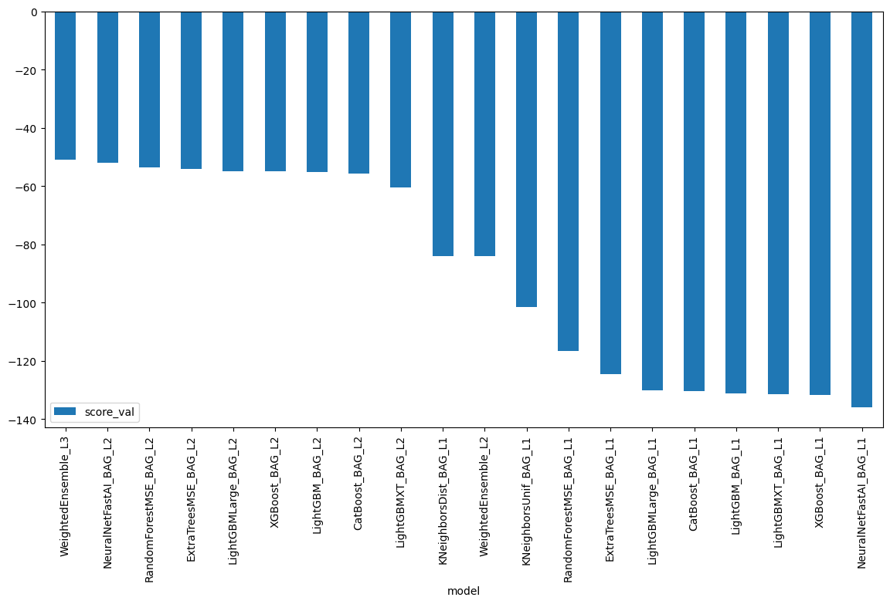
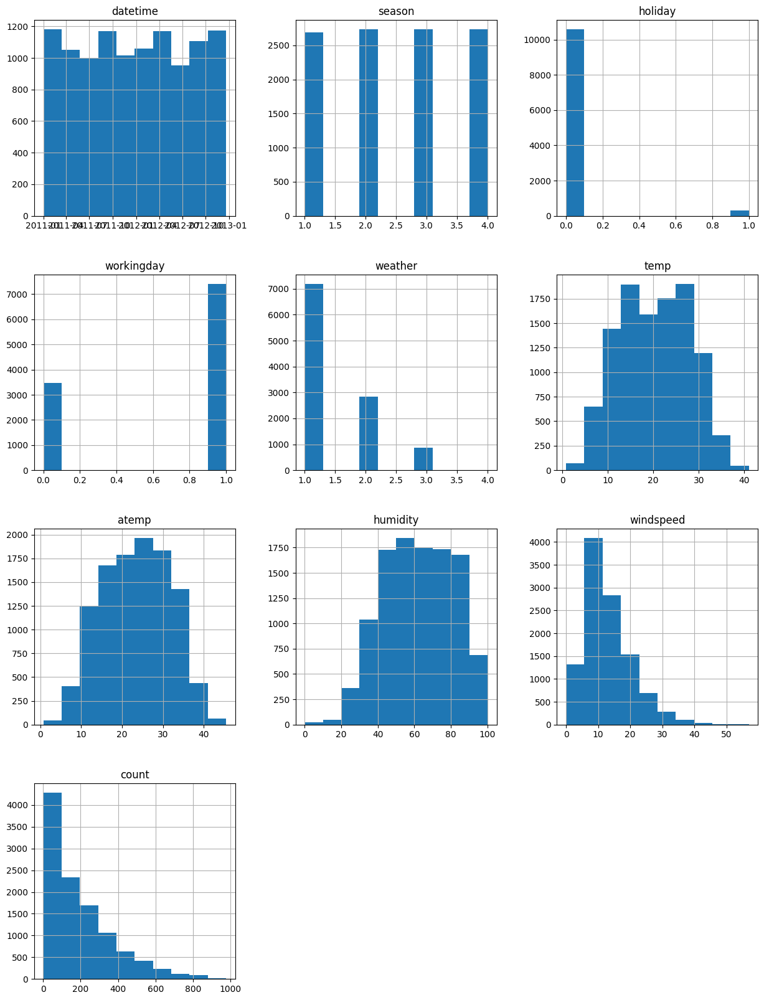
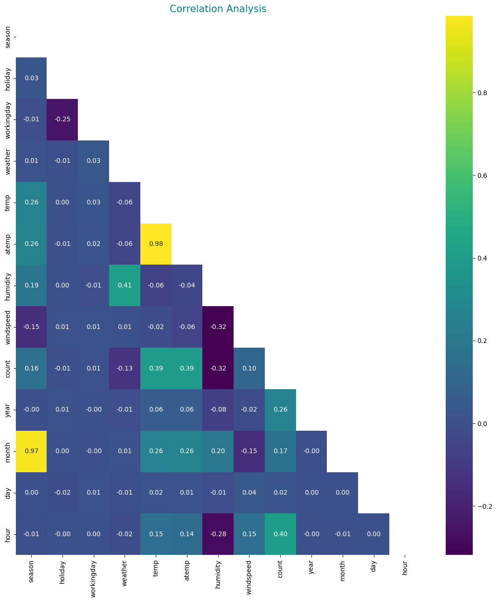
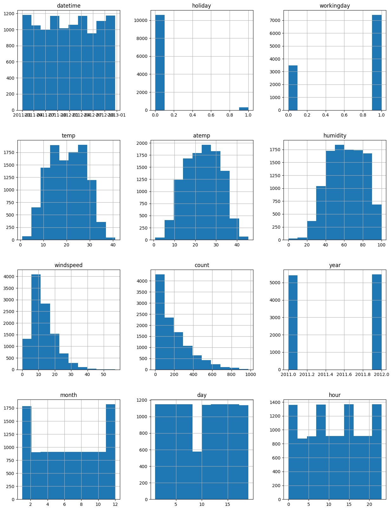
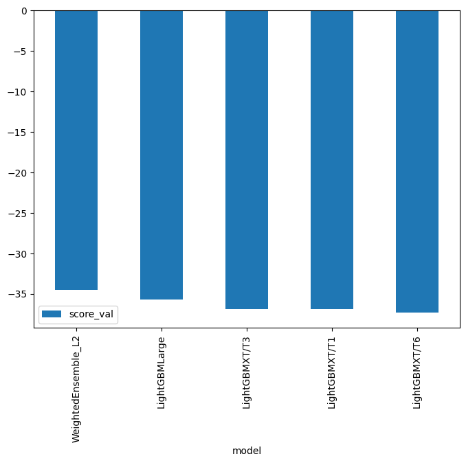
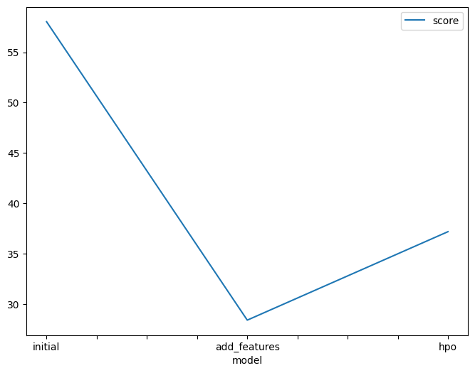
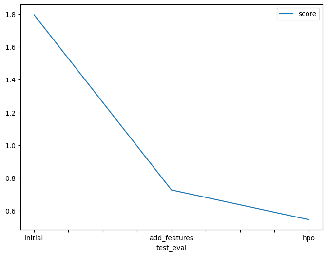

- Open account settings.


- Scroll down to API and click Create New API Token.
- Open up
kaggle.jsonand use the username and key.
This notebook is a template with each step that you need to complete for the project.
Please fill in your code where there are explicit ?
markers in the notebook. You are welcome to add more cells and code as
you see fit.
Once you have completed all the code implementations, please export your notebook as a HTML file so the reviews can view your code. Make sure you have all outputs correctly outputted.
File-> Export Notebook As... -> Export Notebook as HTML
There is a writeup to complete as well after all code implememtation is done. Please answer all questions and attach the necessary tables and charts. You can complete the writeup in either markdown or PDF.
Completing the code template and writeup template will cover all of the rubric points for this project.
The rubric contains "Stand Out Suggestions" for enhancing the project beyond the minimum requirements. The stand out suggestions are optional. If you decide to pursue the "stand out suggestions", you can include the code in this notebook and also discuss the results in the writeup file.
Below is example of steps to get the API username and key. Each student will have their own username and key.
kaggle.json and use the username and key. ml.t3.medium instance (2
vCPU + 4 GiB)Python 3 (MXNet 1.8 Python 3.7 CPU Optimized)import warnings
warnings.filterwarnings('ignore')!pip install -U pip
!pip install -U setuptools wheel
!pip install -U "mxnet<2.0.0" bokeh==2.0.1
!pip install autogluon --no-cache-dir
# Without --no-cache-dir, smaller aws instances may have trouble installingRequirement already satisfied: pip in /workspace/Udacity-Machine-Learning-Project-1/.venv/lib/python3.7/site-packages (24.0)
DEPRECATION: pytorch-lightning 1.7.7 has a non-standard dependency specifier torch>=1.9.*. pip 24.1 will enforce this behaviour change. A possible replacement is to upgrade to a newer version of pytorch-lightning or contact the author to suggest that they release a version with a conforming dependency specifiers. Discussion can be found at https://github.com/pypa/pip/issues/12063
Requirement already satisfied: setuptools in /workspace/Udacity-Machine-Learning-Project-1/.venv/lib/python3.7/site-packages (68.0.0)
Requirement already satisfied: wheel in /workspace/Udacity-Machine-Learning-Project-1/.venv/lib/python3.7/site-packages (0.42.0)
DEPRECATION: pytorch-lightning 1.7.7 has a non-standard dependency specifier torch>=1.9.*. pip 24.1 will enforce this behaviour change. A possible replacement is to upgrade to a newer version of pytorch-lightning or contact the author to suggest that they release a version with a conforming dependency specifiers. Discussion can be found at https://github.com/pypa/pip/issues/12063
Requirement already satisfied: mxnet<2.0.0 in /workspace/Udacity-Machine-Learning-Project-1/.venv/lib/python3.7/site-packages (1.9.1)
Requirement already satisfied: bokeh==2.0.1 in /workspace/Udacity-Machine-Learning-Project-1/.venv/lib/python3.7/site-packages (2.0.1)
Requirement already satisfied: PyYAML>=3.10 in /workspace/Udacity-Machine-Learning-Project-1/.venv/lib/python3.7/site-packages (from bokeh==2.0.1) (6.0.1)
Requirement already satisfied: python-dateutil>=2.1 in /workspace/Udacity-Machine-Learning-Project-1/.venv/lib/python3.7/site-packages (from bokeh==2.0.1) (2.9.0.post0)
Requirement already satisfied: Jinja2>=2.7 in /workspace/Udacity-Machine-Learning-Project-1/.venv/lib/python3.7/site-packages (from bokeh==2.0.1) (3.1.4)
Requirement already satisfied: numpy>=1.11.3 in /workspace/Udacity-Machine-Learning-Project-1/.venv/lib/python3.7/site-packages (from bokeh==2.0.1) (1.21.6)
Requirement already satisfied: pillow>=4.0 in /workspace/Udacity-Machine-Learning-Project-1/.venv/lib/python3.7/site-packages (from bokeh==2.0.1) (9.4.0)
Requirement already satisfied: packaging>=16.8 in /workspace/Udacity-Machine-Learning-Project-1/.venv/lib/python3.7/site-packages (from bokeh==2.0.1) (24.0)
Requirement already satisfied: tornado>=5 in /workspace/Udacity-Machine-Learning-Project-1/.venv/lib/python3.7/site-packages (from bokeh==2.0.1) (6.2)
Requirement already satisfied: typing-extensions>=3.7.4 in /workspace/Udacity-Machine-Learning-Project-1/.venv/lib/python3.7/site-packages (from bokeh==2.0.1) (4.4.0)
Requirement already satisfied: requests<3,>=2.20.0 in /workspace/Udacity-Machine-Learning-Project-1/.venv/lib/python3.7/site-packages (from mxnet<2.0.0) (2.31.0)
Requirement already satisfied: graphviz<0.9.0,>=0.8.1 in /workspace/Udacity-Machine-Learning-Project-1/.venv/lib/python3.7/site-packages (from mxnet<2.0.0) (0.8.4)
Requirement already satisfied: MarkupSafe>=2.0 in /workspace/Udacity-Machine-Learning-Project-1/.venv/lib/python3.7/site-packages (from Jinja2>=2.7->bokeh==2.0.1) (2.1.5)
Requirement already satisfied: six>=1.5 in /workspace/Udacity-Machine-Learning-Project-1/.venv/lib/python3.7/site-packages (from python-dateutil>=2.1->bokeh==2.0.1) (1.16.0)
Requirement already satisfied: charset-normalizer<4,>=2 in /workspace/Udacity-Machine-Learning-Project-1/.venv/lib/python3.7/site-packages (from requests<3,>=2.20.0->mxnet<2.0.0) (3.3.2)
Requirement already satisfied: idna<4,>=2.5 in /workspace/Udacity-Machine-Learning-Project-1/.venv/lib/python3.7/site-packages (from requests<3,>=2.20.0->mxnet<2.0.0) (3.7)
Requirement already satisfied: urllib3<3,>=1.21.1 in /workspace/Udacity-Machine-Learning-Project-1/.venv/lib/python3.7/site-packages (from requests<3,>=2.20.0->mxnet<2.0.0) (1.26.18)
Requirement already satisfied: certifi>=2017.4.17 in /workspace/Udacity-Machine-Learning-Project-1/.venv/lib/python3.7/site-packages (from requests<3,>=2.20.0->mxnet<2.0.0) (2024.2.2)
DEPRECATION: pytorch-lightning 1.7.7 has a non-standard dependency specifier torch>=1.9.*. pip 24.1 will enforce this behaviour change. A possible replacement is to upgrade to a newer version of pytorch-lightning or contact the author to suggest that they release a version with a conforming dependency specifiers. Discussion can be found at https://github.com/pypa/pip/issues/12063
Requirement already satisfied: autogluon in /workspace/Udacity-Machine-Learning-Project-1/.venv/lib/python3.7/site-packages (0.6.2)
Requirement already satisfied: autogluon.core==0.6.2 in /workspace/Udacity-Machine-Learning-Project-1/.venv/lib/python3.7/site-packages (from autogluon.core[all]==0.6.2->autogluon) (0.6.2)
Requirement already satisfied: autogluon.features==0.6.2 in /workspace/Udacity-Machine-Learning-Project-1/.venv/lib/python3.7/site-packages (from autogluon) (0.6.2)
Requirement already satisfied: autogluon.tabular==0.6.2 in /workspace/Udacity-Machine-Learning-Project-1/.venv/lib/python3.7/site-packages (from autogluon.tabular[all]==0.6.2->autogluon) (0.6.2)
Requirement already satisfied: autogluon.multimodal==0.6.2 in /workspace/Udacity-Machine-Learning-Project-1/.venv/lib/python3.7/site-packages (from autogluon) (0.6.2)
Requirement already satisfied: autogluon.text==0.6.2 in /workspace/Udacity-Machine-Learning-Project-1/.venv/lib/python3.7/site-packages (from autogluon) (0.6.2)
Requirement already satisfied: autogluon.vision==0.6.2 in /workspace/Udacity-Machine-Learning-Project-1/.venv/lib/python3.7/site-packages (from autogluon) (0.6.2)
Requirement already satisfied: autogluon.timeseries==0.6.2 in /workspace/Udacity-Machine-Learning-Project-1/.venv/lib/python3.7/site-packages (from autogluon.timeseries[all]==0.6.2->autogluon) (0.6.2)
Requirement already satisfied: numpy<1.24,>=1.21 in /workspace/Udacity-Machine-Learning-Project-1/.venv/lib/python3.7/site-packages (from autogluon.core==0.6.2->autogluon.core[all]==0.6.2->autogluon) (1.21.6)
Requirement already satisfied: scipy<1.10.0,>=1.5.4 in /workspace/Udacity-Machine-Learning-Project-1/.venv/lib/python3.7/site-packages (from autogluon.core==0.6.2->autogluon.core[all]==0.6.2->autogluon) (1.7.3)
Requirement already satisfied: scikit-learn<1.2,>=1.0.0 in /workspace/Udacity-Machine-Learning-Project-1/.venv/lib/python3.7/site-packages (from autogluon.core==0.6.2->autogluon.core[all]==0.6.2->autogluon) (1.0.2)
Requirement already satisfied: psutil<6,>=5.7.3 in /workspace/Udacity-Machine-Learning-Project-1/.venv/lib/python3.7/site-packages (from autogluon.core==0.6.2->autogluon.core[all]==0.6.2->autogluon) (5.9.8)
Requirement already satisfied: networkx<3.0,>=2.3 in /workspace/Udacity-Machine-Learning-Project-1/.venv/lib/python3.7/site-packages (from autogluon.core==0.6.2->autogluon.core[all]==0.6.2->autogluon) (2.6.3)
Requirement already satisfied: pandas!=1.4.0,<1.6,>=1.2.5 in /workspace/Udacity-Machine-Learning-Project-1/.venv/lib/python3.7/site-packages (from autogluon.core==0.6.2->autogluon.core[all]==0.6.2->autogluon) (1.3.5)
Requirement already satisfied: tqdm>=4.38.0 in /workspace/Udacity-Machine-Learning-Project-1/.venv/lib/python3.7/site-packages (from autogluon.core==0.6.2->autogluon.core[all]==0.6.2->autogluon) (4.66.4)
Requirement already satisfied: requests in /workspace/Udacity-Machine-Learning-Project-1/.venv/lib/python3.7/site-packages (from autogluon.core==0.6.2->autogluon.core[all]==0.6.2->autogluon) (2.31.0)
Requirement already satisfied: matplotlib in /workspace/Udacity-Machine-Learning-Project-1/.venv/lib/python3.7/site-packages (from autogluon.core==0.6.2->autogluon.core[all]==0.6.2->autogluon) (3.5.3)
Requirement already satisfied: dask<=2021.11.2,>=2021.09.1 in /workspace/Udacity-Machine-Learning-Project-1/.venv/lib/python3.7/site-packages (from autogluon.core==0.6.2->autogluon.core[all]==0.6.2->autogluon) (2021.11.2)
Requirement already satisfied: distributed<=2021.11.2,>=2021.09.1 in /workspace/Udacity-Machine-Learning-Project-1/.venv/lib/python3.7/site-packages (from autogluon.core==0.6.2->autogluon.core[all]==0.6.2->autogluon) (2021.11.2)
Requirement already satisfied: boto3 in /workspace/Udacity-Machine-Learning-Project-1/.venv/lib/python3.7/site-packages (from autogluon.core==0.6.2->autogluon.core[all]==0.6.2->autogluon) (1.33.13)
Requirement already satisfied: autogluon.common==0.6.2 in /workspace/Udacity-Machine-Learning-Project-1/.venv/lib/python3.7/site-packages (from autogluon.core==0.6.2->autogluon.core[all]==0.6.2->autogluon) (0.6.2)
Requirement already satisfied: hyperopt<0.2.8,>=0.2.7 in /workspace/Udacity-Machine-Learning-Project-1/.venv/lib/python3.7/site-packages (from autogluon.core[all]==0.6.2->autogluon) (0.2.7)
Requirement already satisfied: ray<2.1,>=2.0 in /workspace/Udacity-Machine-Learning-Project-1/.venv/lib/python3.7/site-packages (from ray[tune]<2.1,>=2.0; extra == "all"->autogluon.core[all]==0.6.2->autogluon) (2.0.1)
Requirement already satisfied: Pillow<=9.4.0,>=9.3.0 in /workspace/Udacity-Machine-Learning-Project-1/.venv/lib/python3.7/site-packages (from autogluon.multimodal==0.6.2->autogluon) (9.4.0)
Requirement already satisfied: jsonschema<=4.8.0 in /workspace/Udacity-Machine-Learning-Project-1/.venv/lib/python3.7/site-packages (from autogluon.multimodal==0.6.2->autogluon) (4.8.0)
Requirement already satisfied: seqeval<=1.2.2 in /workspace/Udacity-Machine-Learning-Project-1/.venv/lib/python3.7/site-packages (from autogluon.multimodal==0.6.2->autogluon) (1.2.2)
Requirement already satisfied: evaluate<=0.3.0 in /workspace/Udacity-Machine-Learning-Project-1/.venv/lib/python3.7/site-packages (from autogluon.multimodal==0.6.2->autogluon) (0.3.0)
Requirement already satisfied: accelerate<0.14,>=0.9 in /workspace/Udacity-Machine-Learning-Project-1/.venv/lib/python3.7/site-packages (from autogluon.multimodal==0.6.2->autogluon) (0.13.2)
Requirement already satisfied: timm<0.7.0 in /workspace/Udacity-Machine-Learning-Project-1/.venv/lib/python3.7/site-packages (from autogluon.multimodal==0.6.2->autogluon) (0.6.13)
Requirement already satisfied: torch<1.13,>=1.9 in /workspace/Udacity-Machine-Learning-Project-1/.venv/lib/python3.7/site-packages (from autogluon.multimodal==0.6.2->autogluon) (1.12.1)
Requirement already satisfied: torchvision<0.14.0 in /workspace/Udacity-Machine-Learning-Project-1/.venv/lib/python3.7/site-packages (from autogluon.multimodal==0.6.2->autogluon) (0.13.1)
Requirement already satisfied: torchtext<0.14.0 in /workspace/Udacity-Machine-Learning-Project-1/.venv/lib/python3.7/site-packages (from autogluon.multimodal==0.6.2->autogluon) (0.13.1)
Requirement already satisfied: fairscale<=0.4.6,>=0.4.5 in /workspace/Udacity-Machine-Learning-Project-1/.venv/lib/python3.7/site-packages (from autogluon.multimodal==0.6.2->autogluon) (0.4.6)
Requirement already satisfied: scikit-image<0.20.0,>=0.19.1 in /workspace/Udacity-Machine-Learning-Project-1/.venv/lib/python3.7/site-packages (from autogluon.multimodal==0.6.2->autogluon) (0.19.3)
Requirement already satisfied: smart-open<5.3.0,>=5.2.1 in /workspace/Udacity-Machine-Learning-Project-1/.venv/lib/python3.7/site-packages (from autogluon.multimodal==0.6.2->autogluon) (5.2.1)
Requirement already satisfied: pytorch-lightning<1.8.0,>=1.7.4 in /workspace/Udacity-Machine-Learning-Project-1/.venv/lib/python3.7/site-packages (from autogluon.multimodal==0.6.2->autogluon) (1.7.7)
Requirement already satisfied: text-unidecode<=1.3 in /workspace/Udacity-Machine-Learning-Project-1/.venv/lib/python3.7/site-packages (from autogluon.multimodal==0.6.2->autogluon) (1.3)
Requirement already satisfied: torchmetrics<0.9.0,>=0.8.0 in /workspace/Udacity-Machine-Learning-Project-1/.venv/lib/python3.7/site-packages (from autogluon.multimodal==0.6.2->autogluon) (0.8.2)
Requirement already satisfied: transformers<4.24.0,>=4.23.0 in /workspace/Udacity-Machine-Learning-Project-1/.venv/lib/python3.7/site-packages (from autogluon.multimodal==0.6.2->autogluon) (4.23.1)
Requirement already satisfied: nptyping<1.5.0,>=1.4.4 in /workspace/Udacity-Machine-Learning-Project-1/.venv/lib/python3.7/site-packages (from autogluon.multimodal==0.6.2->autogluon) (1.4.4)
Requirement already satisfied: omegaconf<2.2.0,>=2.1.1 in /workspace/Udacity-Machine-Learning-Project-1/.venv/lib/python3.7/site-packages (from autogluon.multimodal==0.6.2->autogluon) (2.1.2)
Requirement already satisfied: sentencepiece<0.2.0,>=0.1.95 in /workspace/Udacity-Machine-Learning-Project-1/.venv/lib/python3.7/site-packages (from autogluon.multimodal==0.6.2->autogluon) (0.1.99)
Requirement already satisfied: pytorch-metric-learning<1.4.0,>=1.3.0 in /workspace/Udacity-Machine-Learning-Project-1/.venv/lib/python3.7/site-packages (from autogluon.multimodal==0.6.2->autogluon) (1.3.2)
Requirement already satisfied: nlpaug<=1.1.10,>=1.1.10 in /workspace/Udacity-Machine-Learning-Project-1/.venv/lib/python3.7/site-packages (from autogluon.multimodal==0.6.2->autogluon) (1.1.10)
Requirement already satisfied: nltk<4.0.0,>=3.4.5 in /workspace/Udacity-Machine-Learning-Project-1/.venv/lib/python3.7/site-packages (from autogluon.multimodal==0.6.2->autogluon) (3.8.1)
Requirement already satisfied: openmim<=0.2.1,>0.1.5 in /workspace/Udacity-Machine-Learning-Project-1/.venv/lib/python3.7/site-packages (from autogluon.multimodal==0.6.2->autogluon) (0.2.1)
Requirement already satisfied: defusedxml<=0.7.1,>=0.7.1 in /workspace/Udacity-Machine-Learning-Project-1/.venv/lib/python3.7/site-packages (from autogluon.multimodal==0.6.2->autogluon) (0.7.1)
Requirement already satisfied: albumentations<=1.2.0,>=1.1.0 in /workspace/Udacity-Machine-Learning-Project-1/.venv/lib/python3.7/site-packages (from autogluon.multimodal==0.6.2->autogluon) (1.1.0)
Requirement already satisfied: catboost<1.2,>=1.0 in /workspace/Udacity-Machine-Learning-Project-1/.venv/lib/python3.7/site-packages (from autogluon.tabular[all]==0.6.2->autogluon) (1.1.1)
Requirement already satisfied: xgboost<1.8,>=1.6 in /workspace/Udacity-Machine-Learning-Project-1/.venv/lib/python3.7/site-packages (from autogluon.tabular[all]==0.6.2->autogluon) (1.6.2)
Requirement already satisfied: lightgbm<3.4,>=3.3 in /workspace/Udacity-Machine-Learning-Project-1/.venv/lib/python3.7/site-packages (from autogluon.tabular[all]==0.6.2->autogluon) (3.3.5)
Requirement already satisfied: fastai<2.8,>=2.3.1 in /workspace/Udacity-Machine-Learning-Project-1/.venv/lib/python3.7/site-packages (from autogluon.tabular[all]==0.6.2->autogluon) (2.7.12)
Requirement already satisfied: joblib~=1.1 in /workspace/Udacity-Machine-Learning-Project-1/.venv/lib/python3.7/site-packages (from autogluon.timeseries==0.6.2->autogluon.timeseries[all]==0.6.2->autogluon) (1.3.2)
Requirement already satisfied: statsmodels~=0.13.0 in /workspace/Udacity-Machine-Learning-Project-1/.venv/lib/python3.7/site-packages (from autogluon.timeseries==0.6.2->autogluon.timeseries[all]==0.6.2->autogluon) (0.13.5)
Requirement already satisfied: gluonts~=0.11.0 in /workspace/Udacity-Machine-Learning-Project-1/.venv/lib/python3.7/site-packages (from autogluon.timeseries==0.6.2->autogluon.timeseries[all]==0.6.2->autogluon) (0.11.12)
Requirement already satisfied: pmdarima~=1.8.2 in /workspace/Udacity-Machine-Learning-Project-1/.venv/lib/python3.7/site-packages (from autogluon.timeseries[all]==0.6.2->autogluon) (1.8.5)
Requirement already satisfied: sktime<0.14,>=0.13.1 in /workspace/Udacity-Machine-Learning-Project-1/.venv/lib/python3.7/site-packages (from autogluon.timeseries[all]==0.6.2->autogluon) (0.13.4)
Requirement already satisfied: tbats~=1.1 in /workspace/Udacity-Machine-Learning-Project-1/.venv/lib/python3.7/site-packages (from autogluon.timeseries[all]==0.6.2->autogluon) (1.1.3)
Requirement already satisfied: gluoncv<0.10.6,>=0.10.5 in /workspace/Udacity-Machine-Learning-Project-1/.venv/lib/python3.7/site-packages (from autogluon.vision==0.6.2->autogluon) (0.10.5.post0)
Requirement already satisfied: setuptools in /workspace/Udacity-Machine-Learning-Project-1/.venv/lib/python3.7/site-packages (from autogluon.common==0.6.2->autogluon.core==0.6.2->autogluon.core[all]==0.6.2->autogluon) (68.0.0)
Requirement already satisfied: packaging>=20.0 in /workspace/Udacity-Machine-Learning-Project-1/.venv/lib/python3.7/site-packages (from accelerate<0.14,>=0.9->autogluon.multimodal==0.6.2->autogluon) (24.0)
Requirement already satisfied: pyyaml in /workspace/Udacity-Machine-Learning-Project-1/.venv/lib/python3.7/site-packages (from accelerate<0.14,>=0.9->autogluon.multimodal==0.6.2->autogluon) (6.0.1)
Requirement already satisfied: qudida>=0.0.4 in /workspace/Udacity-Machine-Learning-Project-1/.venv/lib/python3.7/site-packages (from albumentations<=1.2.0,>=1.1.0->autogluon.multimodal==0.6.2->autogluon) (0.0.4)
Requirement already satisfied: opencv-python-headless>=4.1.1 in /workspace/Udacity-Machine-Learning-Project-1/.venv/lib/python3.7/site-packages (from albumentations<=1.2.0,>=1.1.0->autogluon.multimodal==0.6.2->autogluon) (4.9.0.80)
Requirement already satisfied: graphviz in /workspace/Udacity-Machine-Learning-Project-1/.venv/lib/python3.7/site-packages (from catboost<1.2,>=1.0->autogluon.tabular[all]==0.6.2->autogluon) (0.8.4)
Requirement already satisfied: plotly in /workspace/Udacity-Machine-Learning-Project-1/.venv/lib/python3.7/site-packages (from catboost<1.2,>=1.0->autogluon.tabular[all]==0.6.2->autogluon) (5.18.0)
Requirement already satisfied: six in /workspace/Udacity-Machine-Learning-Project-1/.venv/lib/python3.7/site-packages (from catboost<1.2,>=1.0->autogluon.tabular[all]==0.6.2->autogluon) (1.16.0)
Requirement already satisfied: cloudpickle>=1.1.1 in /workspace/Udacity-Machine-Learning-Project-1/.venv/lib/python3.7/site-packages (from dask<=2021.11.2,>=2021.09.1->autogluon.core==0.6.2->autogluon.core[all]==0.6.2->autogluon) (2.2.1)
Requirement already satisfied: fsspec>=0.6.0 in /workspace/Udacity-Machine-Learning-Project-1/.venv/lib/python3.7/site-packages (from dask<=2021.11.2,>=2021.09.1->autogluon.core==0.6.2->autogluon.core[all]==0.6.2->autogluon) (2023.1.0)
Requirement already satisfied: partd>=0.3.10 in /workspace/Udacity-Machine-Learning-Project-1/.venv/lib/python3.7/site-packages (from dask<=2021.11.2,>=2021.09.1->autogluon.core==0.6.2->autogluon.core[all]==0.6.2->autogluon) (1.4.1)
Requirement already satisfied: toolz>=0.8.2 in /workspace/Udacity-Machine-Learning-Project-1/.venv/lib/python3.7/site-packages (from dask<=2021.11.2,>=2021.09.1->autogluon.core==0.6.2->autogluon.core[all]==0.6.2->autogluon) (0.12.1)
Requirement already satisfied: click>=6.6 in /workspace/Udacity-Machine-Learning-Project-1/.venv/lib/python3.7/site-packages (from distributed<=2021.11.2,>=2021.09.1->autogluon.core==0.6.2->autogluon.core[all]==0.6.2->autogluon) (8.0.4)
Requirement already satisfied: jinja2 in /workspace/Udacity-Machine-Learning-Project-1/.venv/lib/python3.7/site-packages (from distributed<=2021.11.2,>=2021.09.1->autogluon.core==0.6.2->autogluon.core[all]==0.6.2->autogluon) (3.1.4)
Requirement already satisfied: msgpack>=0.6.0 in /workspace/Udacity-Machine-Learning-Project-1/.venv/lib/python3.7/site-packages (from distributed<=2021.11.2,>=2021.09.1->autogluon.core==0.6.2->autogluon.core[all]==0.6.2->autogluon) (1.0.5)
Requirement already satisfied: sortedcontainers!=2.0.0,!=2.0.1 in /workspace/Udacity-Machine-Learning-Project-1/.venv/lib/python3.7/site-packages (from distributed<=2021.11.2,>=2021.09.1->autogluon.core==0.6.2->autogluon.core[all]==0.6.2->autogluon) (2.4.0)
Requirement already satisfied: tblib>=1.6.0 in /workspace/Udacity-Machine-Learning-Project-1/.venv/lib/python3.7/site-packages (from distributed<=2021.11.2,>=2021.09.1->autogluon.core==0.6.2->autogluon.core[all]==0.6.2->autogluon) (2.0.0)
Requirement already satisfied: zict>=0.1.3 in /workspace/Udacity-Machine-Learning-Project-1/.venv/lib/python3.7/site-packages (from distributed<=2021.11.2,>=2021.09.1->autogluon.core==0.6.2->autogluon.core[all]==0.6.2->autogluon) (2.2.0)
Requirement already satisfied: tornado>=5 in /workspace/Udacity-Machine-Learning-Project-1/.venv/lib/python3.7/site-packages (from distributed<=2021.11.2,>=2021.09.1->autogluon.core==0.6.2->autogluon.core[all]==0.6.2->autogluon) (6.2)
Requirement already satisfied: datasets>=2.0.0 in /workspace/Udacity-Machine-Learning-Project-1/.venv/lib/python3.7/site-packages (from evaluate<=0.3.0->autogluon.multimodal==0.6.2->autogluon) (2.13.2)
Requirement already satisfied: dill in /workspace/Udacity-Machine-Learning-Project-1/.venv/lib/python3.7/site-packages (from evaluate<=0.3.0->autogluon.multimodal==0.6.2->autogluon) (0.3.6)
Requirement already satisfied: xxhash in /workspace/Udacity-Machine-Learning-Project-1/.venv/lib/python3.7/site-packages (from evaluate<=0.3.0->autogluon.multimodal==0.6.2->autogluon) (3.4.1)
Requirement already satisfied: multiprocess in /workspace/Udacity-Machine-Learning-Project-1/.venv/lib/python3.7/site-packages (from evaluate<=0.3.0->autogluon.multimodal==0.6.2->autogluon) (0.70.14)
Requirement already satisfied: huggingface-hub>=0.7.0 in /workspace/Udacity-Machine-Learning-Project-1/.venv/lib/python3.7/site-packages (from evaluate<=0.3.0->autogluon.multimodal==0.6.2->autogluon) (0.16.4)
Requirement already satisfied: responses<0.19 in /workspace/Udacity-Machine-Learning-Project-1/.venv/lib/python3.7/site-packages (from evaluate<=0.3.0->autogluon.multimodal==0.6.2->autogluon) (0.18.0)
Requirement already satisfied: importlib-metadata in /workspace/Udacity-Machine-Learning-Project-1/.venv/lib/python3.7/site-packages (from evaluate<=0.3.0->autogluon.multimodal==0.6.2->autogluon) (6.7.0)
Requirement already satisfied: pip in /workspace/Udacity-Machine-Learning-Project-1/.venv/lib/python3.7/site-packages (from fastai<2.8,>=2.3.1->autogluon.tabular[all]==0.6.2->autogluon) (24.0)
Requirement already satisfied: fastdownload<2,>=0.0.5 in /workspace/Udacity-Machine-Learning-Project-1/.venv/lib/python3.7/site-packages (from fastai<2.8,>=2.3.1->autogluon.tabular[all]==0.6.2->autogluon) (0.0.7)
Requirement already satisfied: fastcore<1.6,>=1.5.29 in /workspace/Udacity-Machine-Learning-Project-1/.venv/lib/python3.7/site-packages (from fastai<2.8,>=2.3.1->autogluon.tabular[all]==0.6.2->autogluon) (1.5.35)
Requirement already satisfied: fastprogress>=0.2.4 in /workspace/Udacity-Machine-Learning-Project-1/.venv/lib/python3.7/site-packages (from fastai<2.8,>=2.3.1->autogluon.tabular[all]==0.6.2->autogluon) (1.0.3)
Requirement already satisfied: spacy<4 in /workspace/Udacity-Machine-Learning-Project-1/.venv/lib/python3.7/site-packages (from fastai<2.8,>=2.3.1->autogluon.tabular[all]==0.6.2->autogluon) (3.7.4)
Requirement already satisfied: portalocker in /workspace/Udacity-Machine-Learning-Project-1/.venv/lib/python3.7/site-packages (from gluoncv<0.10.6,>=0.10.5->autogluon.vision==0.6.2->autogluon) (2.7.0)
Requirement already satisfied: yacs in /workspace/Udacity-Machine-Learning-Project-1/.venv/lib/python3.7/site-packages (from gluoncv<0.10.6,>=0.10.5->autogluon.vision==0.6.2->autogluon) (0.1.8)
Requirement already satisfied: autocfg in /workspace/Udacity-Machine-Learning-Project-1/.venv/lib/python3.7/site-packages (from gluoncv<0.10.6,>=0.10.5->autogluon.vision==0.6.2->autogluon) (0.0.8)
Requirement already satisfied: opencv-python in /workspace/Udacity-Machine-Learning-Project-1/.venv/lib/python3.7/site-packages (from gluoncv<0.10.6,>=0.10.5->autogluon.vision==0.6.2->autogluon) (4.9.0.80)
Requirement already satisfied: pydantic~=1.7 in /workspace/Udacity-Machine-Learning-Project-1/.venv/lib/python3.7/site-packages (from gluonts~=0.11.0->autogluon.timeseries==0.6.2->autogluon.timeseries[all]==0.6.2->autogluon) (1.10.15)
Requirement already satisfied: typing-extensions~=4.0 in /workspace/Udacity-Machine-Learning-Project-1/.venv/lib/python3.7/site-packages (from gluonts~=0.11.0->autogluon.timeseries==0.6.2->autogluon.timeseries[all]==0.6.2->autogluon) (4.4.0)
Requirement already satisfied: future in /workspace/Udacity-Machine-Learning-Project-1/.venv/lib/python3.7/site-packages (from hyperopt<0.2.8,>=0.2.7->autogluon.core[all]==0.6.2->autogluon) (1.0.0)
Requirement already satisfied: py4j in /workspace/Udacity-Machine-Learning-Project-1/.venv/lib/python3.7/site-packages (from hyperopt<0.2.8,>=0.2.7->autogluon.core[all]==0.6.2->autogluon) (0.10.9.7)
Requirement already satisfied: attrs>=17.4.0 in /workspace/Udacity-Machine-Learning-Project-1/.venv/lib/python3.7/site-packages (from jsonschema<=4.8.0->autogluon.multimodal==0.6.2->autogluon) (23.2.0)
Requirement already satisfied: importlib-resources>=1.4.0 in /workspace/Udacity-Machine-Learning-Project-1/.venv/lib/python3.7/site-packages (from jsonschema<=4.8.0->autogluon.multimodal==0.6.2->autogluon) (5.12.0)
Requirement already satisfied: pyrsistent!=0.17.0,!=0.17.1,!=0.17.2,>=0.14.0 in /workspace/Udacity-Machine-Learning-Project-1/.venv/lib/python3.7/site-packages (from jsonschema<=4.8.0->autogluon.multimodal==0.6.2->autogluon) (0.19.3)
Requirement already satisfied: wheel in /workspace/Udacity-Machine-Learning-Project-1/.venv/lib/python3.7/site-packages (from lightgbm<3.4,>=3.3->autogluon.tabular[all]==0.6.2->autogluon) (0.42.0)
Requirement already satisfied: regex>=2021.8.3 in /workspace/Udacity-Machine-Learning-Project-1/.venv/lib/python3.7/site-packages (from nltk<4.0.0,>=3.4.5->autogluon.multimodal==0.6.2->autogluon) (2024.4.16)
Requirement already satisfied: typish>=1.7.0 in /workspace/Udacity-Machine-Learning-Project-1/.venv/lib/python3.7/site-packages (from nptyping<1.5.0,>=1.4.4->autogluon.multimodal==0.6.2->autogluon) (1.9.3)
Requirement already satisfied: antlr4-python3-runtime==4.8 in /workspace/Udacity-Machine-Learning-Project-1/.venv/lib/python3.7/site-packages (from omegaconf<2.2.0,>=2.1.1->autogluon.multimodal==0.6.2->autogluon) (4.8)
Requirement already satisfied: colorama in /workspace/Udacity-Machine-Learning-Project-1/.venv/lib/python3.7/site-packages (from openmim<=0.2.1,>0.1.5->autogluon.multimodal==0.6.2->autogluon) (0.4.6)
Requirement already satisfied: model-index in /workspace/Udacity-Machine-Learning-Project-1/.venv/lib/python3.7/site-packages (from openmim<=0.2.1,>0.1.5->autogluon.multimodal==0.6.2->autogluon) (0.1.11)
Requirement already satisfied: rich in /workspace/Udacity-Machine-Learning-Project-1/.venv/lib/python3.7/site-packages (from openmim<=0.2.1,>0.1.5->autogluon.multimodal==0.6.2->autogluon) (13.7.1)
Requirement already satisfied: tabulate in /workspace/Udacity-Machine-Learning-Project-1/.venv/lib/python3.7/site-packages (from openmim<=0.2.1,>0.1.5->autogluon.multimodal==0.6.2->autogluon) (0.9.0)
Requirement already satisfied: python-dateutil>=2.7.3 in /workspace/Udacity-Machine-Learning-Project-1/.venv/lib/python3.7/site-packages (from pandas!=1.4.0,<1.6,>=1.2.5->autogluon.core==0.6.2->autogluon.core[all]==0.6.2->autogluon) (2.9.0.post0)
Requirement already satisfied: pytz>=2017.3 in /workspace/Udacity-Machine-Learning-Project-1/.venv/lib/python3.7/site-packages (from pandas!=1.4.0,<1.6,>=1.2.5->autogluon.core==0.6.2->autogluon.core[all]==0.6.2->autogluon) (2024.1)
Requirement already satisfied: Cython!=0.29.18,>=0.29 in /workspace/Udacity-Machine-Learning-Project-1/.venv/lib/python3.7/site-packages (from pmdarima~=1.8.2->autogluon.timeseries[all]==0.6.2->autogluon) (3.0.10)
Requirement already satisfied: urllib3 in /workspace/Udacity-Machine-Learning-Project-1/.venv/lib/python3.7/site-packages (from pmdarima~=1.8.2->autogluon.timeseries[all]==0.6.2->autogluon) (1.26.18)
Requirement already satisfied: tensorboard>=2.9.1 in /workspace/Udacity-Machine-Learning-Project-1/.venv/lib/python3.7/site-packages (from pytorch-lightning<1.8.0,>=1.7.4->autogluon.multimodal==0.6.2->autogluon) (2.11.2)
Requirement already satisfied: pyDeprecate>=0.3.1 in /workspace/Udacity-Machine-Learning-Project-1/.venv/lib/python3.7/site-packages (from pytorch-lightning<1.8.0,>=1.7.4->autogluon.multimodal==0.6.2->autogluon) (0.3.2)
Requirement already satisfied: filelock in /workspace/Udacity-Machine-Learning-Project-1/.venv/lib/python3.7/site-packages (from ray<2.1,>=2.0->ray[tune]<2.1,>=2.0; extra == "all"->autogluon.core[all]==0.6.2->autogluon) (3.12.2)
Requirement already satisfied: protobuf<4.0.0,>=3.15.3 in /workspace/Udacity-Machine-Learning-Project-1/.venv/lib/python3.7/site-packages (from ray<2.1,>=2.0->ray[tune]<2.1,>=2.0; extra == "all"->autogluon.core[all]==0.6.2->autogluon) (3.20.3)
Requirement already satisfied: aiosignal in /workspace/Udacity-Machine-Learning-Project-1/.venv/lib/python3.7/site-packages (from ray<2.1,>=2.0->ray[tune]<2.1,>=2.0; extra == "all"->autogluon.core[all]==0.6.2->autogluon) (1.3.1)
Requirement already satisfied: frozenlist in /workspace/Udacity-Machine-Learning-Project-1/.venv/lib/python3.7/site-packages (from ray<2.1,>=2.0->ray[tune]<2.1,>=2.0; extra == "all"->autogluon.core[all]==0.6.2->autogluon) (1.3.3)
Requirement already satisfied: virtualenv in /workspace/Udacity-Machine-Learning-Project-1/.venv/lib/python3.7/site-packages (from ray<2.1,>=2.0->ray[tune]<2.1,>=2.0; extra == "all"->autogluon.core[all]==0.6.2->autogluon) (20.21.1)
Requirement already satisfied: grpcio<=1.43.0,>=1.32.0 in /workspace/Udacity-Machine-Learning-Project-1/.venv/lib/python3.7/site-packages (from ray<2.1,>=2.0->ray[tune]<2.1,>=2.0; extra == "all"->autogluon.core[all]==0.6.2->autogluon) (1.43.0)
Requirement already satisfied: tensorboardX>=1.9 in /workspace/Udacity-Machine-Learning-Project-1/.venv/lib/python3.7/site-packages (from ray[tune]<2.1,>=2.0; extra == "all"->autogluon.core[all]==0.6.2->autogluon) (2.6.2.2)
Requirement already satisfied: charset-normalizer<4,>=2 in /workspace/Udacity-Machine-Learning-Project-1/.venv/lib/python3.7/site-packages (from requests->autogluon.core==0.6.2->autogluon.core[all]==0.6.2->autogluon) (3.3.2)
Requirement already satisfied: idna<4,>=2.5 in /workspace/Udacity-Machine-Learning-Project-1/.venv/lib/python3.7/site-packages (from requests->autogluon.core==0.6.2->autogluon.core[all]==0.6.2->autogluon) (3.7)
Requirement already satisfied: certifi>=2017.4.17 in /workspace/Udacity-Machine-Learning-Project-1/.venv/lib/python3.7/site-packages (from requests->autogluon.core==0.6.2->autogluon.core[all]==0.6.2->autogluon) (2024.2.2)
Requirement already satisfied: imageio>=2.4.1 in /workspace/Udacity-Machine-Learning-Project-1/.venv/lib/python3.7/site-packages (from scikit-image<0.20.0,>=0.19.1->autogluon.multimodal==0.6.2->autogluon) (2.31.2)
Requirement already satisfied: tifffile>=2019.7.26 in /workspace/Udacity-Machine-Learning-Project-1/.venv/lib/python3.7/site-packages (from scikit-image<0.20.0,>=0.19.1->autogluon.multimodal==0.6.2->autogluon) (2021.11.2)
Requirement already satisfied: PyWavelets>=1.1.1 in /workspace/Udacity-Machine-Learning-Project-1/.venv/lib/python3.7/site-packages (from scikit-image<0.20.0,>=0.19.1->autogluon.multimodal==0.6.2->autogluon) (1.3.0)
Requirement already satisfied: threadpoolctl>=2.0.0 in /workspace/Udacity-Machine-Learning-Project-1/.venv/lib/python3.7/site-packages (from scikit-learn<1.2,>=1.0.0->autogluon.core==0.6.2->autogluon.core[all]==0.6.2->autogluon) (3.1.0)
Requirement already satisfied: deprecated>=1.2.13 in /workspace/Udacity-Machine-Learning-Project-1/.venv/lib/python3.7/site-packages (from sktime<0.14,>=0.13.1->autogluon.timeseries[all]==0.6.2->autogluon) (1.2.14)
Requirement already satisfied: numba>=0.53 in /workspace/Udacity-Machine-Learning-Project-1/.venv/lib/python3.7/site-packages (from sktime<0.14,>=0.13.1->autogluon.timeseries[all]==0.6.2->autogluon) (0.56.4)
Requirement already satisfied: patsy>=0.5.2 in /workspace/Udacity-Machine-Learning-Project-1/.venv/lib/python3.7/site-packages (from statsmodels~=0.13.0->autogluon.timeseries==0.6.2->autogluon.timeseries[all]==0.6.2->autogluon) (0.5.6)
Requirement already satisfied: tokenizers!=0.11.3,<0.14,>=0.11.1 in /workspace/Udacity-Machine-Learning-Project-1/.venv/lib/python3.7/site-packages (from transformers<4.24.0,>=4.23.0->autogluon.multimodal==0.6.2->autogluon) (0.13.3)
Requirement already satisfied: botocore<1.34.0,>=1.33.13 in /workspace/Udacity-Machine-Learning-Project-1/.venv/lib/python3.7/site-packages (from boto3->autogluon.core==0.6.2->autogluon.core[all]==0.6.2->autogluon) (1.33.13)
Requirement already satisfied: jmespath<2.0.0,>=0.7.1 in /workspace/Udacity-Machine-Learning-Project-1/.venv/lib/python3.7/site-packages (from boto3->autogluon.core==0.6.2->autogluon.core[all]==0.6.2->autogluon) (1.0.1)
Requirement already satisfied: s3transfer<0.9.0,>=0.8.2 in /workspace/Udacity-Machine-Learning-Project-1/.venv/lib/python3.7/site-packages (from boto3->autogluon.core==0.6.2->autogluon.core[all]==0.6.2->autogluon) (0.8.2)
Requirement already satisfied: cycler>=0.10 in /workspace/Udacity-Machine-Learning-Project-1/.venv/lib/python3.7/site-packages (from matplotlib->autogluon.core==0.6.2->autogluon.core[all]==0.6.2->autogluon) (0.11.0)
Requirement already satisfied: fonttools>=4.22.0 in /workspace/Udacity-Machine-Learning-Project-1/.venv/lib/python3.7/site-packages (from matplotlib->autogluon.core==0.6.2->autogluon.core[all]==0.6.2->autogluon) (4.38.0)
Requirement already satisfied: kiwisolver>=1.0.1 in /workspace/Udacity-Machine-Learning-Project-1/.venv/lib/python3.7/site-packages (from matplotlib->autogluon.core==0.6.2->autogluon.core[all]==0.6.2->autogluon) (1.4.5)
Requirement already satisfied: pyparsing>=2.2.1 in /workspace/Udacity-Machine-Learning-Project-1/.venv/lib/python3.7/site-packages (from matplotlib->autogluon.core==0.6.2->autogluon.core[all]==0.6.2->autogluon) (3.1.2)
Requirement already satisfied: pyarrow>=8.0.0 in /workspace/Udacity-Machine-Learning-Project-1/.venv/lib/python3.7/site-packages (from datasets>=2.0.0->evaluate<=0.3.0->autogluon.multimodal==0.6.2->autogluon) (12.0.1)
Requirement already satisfied: aiohttp in /workspace/Udacity-Machine-Learning-Project-1/.venv/lib/python3.7/site-packages (from datasets>=2.0.0->evaluate<=0.3.0->autogluon.multimodal==0.6.2->autogluon) (3.8.6)
Requirement already satisfied: wrapt<2,>=1.10 in /workspace/Udacity-Machine-Learning-Project-1/.venv/lib/python3.7/site-packages (from deprecated>=1.2.13->sktime<0.14,>=0.13.1->autogluon.timeseries[all]==0.6.2->autogluon) (1.16.0)
Requirement already satisfied: zipp>=3.1.0 in /workspace/Udacity-Machine-Learning-Project-1/.venv/lib/python3.7/site-packages (from importlib-resources>=1.4.0->jsonschema<=4.8.0->autogluon.multimodal==0.6.2->autogluon) (3.15.0)
Requirement already satisfied: llvmlite<0.40,>=0.39.0dev0 in /workspace/Udacity-Machine-Learning-Project-1/.venv/lib/python3.7/site-packages (from numba>=0.53->sktime<0.14,>=0.13.1->autogluon.timeseries[all]==0.6.2->autogluon) (0.39.1)
Requirement already satisfied: locket in /workspace/Udacity-Machine-Learning-Project-1/.venv/lib/python3.7/site-packages (from partd>=0.3.10->dask<=2021.11.2,>=2021.09.1->autogluon.core==0.6.2->autogluon.core[all]==0.6.2->autogluon) (1.0.0)
Requirement already satisfied: spacy-legacy<3.1.0,>=3.0.11 in /workspace/Udacity-Machine-Learning-Project-1/.venv/lib/python3.7/site-packages (from spacy<4->fastai<2.8,>=2.3.1->autogluon.tabular[all]==0.6.2->autogluon) (3.0.12)
Requirement already satisfied: spacy-loggers<2.0.0,>=1.0.0 in /workspace/Udacity-Machine-Learning-Project-1/.venv/lib/python3.7/site-packages (from spacy<4->fastai<2.8,>=2.3.1->autogluon.tabular[all]==0.6.2->autogluon) (1.0.5)
Requirement already satisfied: murmurhash<1.1.0,>=0.28.0 in /workspace/Udacity-Machine-Learning-Project-1/.venv/lib/python3.7/site-packages (from spacy<4->fastai<2.8,>=2.3.1->autogluon.tabular[all]==0.6.2->autogluon) (1.0.10)
Requirement already satisfied: cymem<2.1.0,>=2.0.2 in /workspace/Udacity-Machine-Learning-Project-1/.venv/lib/python3.7/site-packages (from spacy<4->fastai<2.8,>=2.3.1->autogluon.tabular[all]==0.6.2->autogluon) (2.0.8)
Requirement already satisfied: preshed<3.1.0,>=3.0.2 in /workspace/Udacity-Machine-Learning-Project-1/.venv/lib/python3.7/site-packages (from spacy<4->fastai<2.8,>=2.3.1->autogluon.tabular[all]==0.6.2->autogluon) (3.0.9)
Requirement already satisfied: thinc<8.3.0,>=8.2.2 in /workspace/Udacity-Machine-Learning-Project-1/.venv/lib/python3.7/site-packages (from spacy<4->fastai<2.8,>=2.3.1->autogluon.tabular[all]==0.6.2->autogluon) (8.2.3)
Requirement already satisfied: wasabi<1.2.0,>=0.9.1 in /workspace/Udacity-Machine-Learning-Project-1/.venv/lib/python3.7/site-packages (from spacy<4->fastai<2.8,>=2.3.1->autogluon.tabular[all]==0.6.2->autogluon) (1.1.2)
Requirement already satisfied: srsly<3.0.0,>=2.4.3 in /workspace/Udacity-Machine-Learning-Project-1/.venv/lib/python3.7/site-packages (from spacy<4->fastai<2.8,>=2.3.1->autogluon.tabular[all]==0.6.2->autogluon) (2.4.8)
Requirement already satisfied: catalogue<2.1.0,>=2.0.6 in /workspace/Udacity-Machine-Learning-Project-1/.venv/lib/python3.7/site-packages (from spacy<4->fastai<2.8,>=2.3.1->autogluon.tabular[all]==0.6.2->autogluon) (2.0.10)
Requirement already satisfied: weasel<0.4.0,>=0.1.0 in /workspace/Udacity-Machine-Learning-Project-1/.venv/lib/python3.7/site-packages (from spacy<4->fastai<2.8,>=2.3.1->autogluon.tabular[all]==0.6.2->autogluon) (0.3.4)
Requirement already satisfied: typer<0.10.0,>=0.3.0 in /workspace/Udacity-Machine-Learning-Project-1/.venv/lib/python3.7/site-packages (from spacy<4->fastai<2.8,>=2.3.1->autogluon.tabular[all]==0.6.2->autogluon) (0.9.4)
Requirement already satisfied: langcodes<4.0.0,>=3.2.0 in /workspace/Udacity-Machine-Learning-Project-1/.venv/lib/python3.7/site-packages (from spacy<4->fastai<2.8,>=2.3.1->autogluon.tabular[all]==0.6.2->autogluon) (3.3.0)
Requirement already satisfied: absl-py>=0.4 in /workspace/Udacity-Machine-Learning-Project-1/.venv/lib/python3.7/site-packages (from tensorboard>=2.9.1->pytorch-lightning<1.8.0,>=1.7.4->autogluon.multimodal==0.6.2->autogluon) (2.1.0)
Requirement already satisfied: google-auth<3,>=1.6.3 in /workspace/Udacity-Machine-Learning-Project-1/.venv/lib/python3.7/site-packages (from tensorboard>=2.9.1->pytorch-lightning<1.8.0,>=1.7.4->autogluon.multimodal==0.6.2->autogluon) (2.29.0)
Requirement already satisfied: google-auth-oauthlib<0.5,>=0.4.1 in /workspace/Udacity-Machine-Learning-Project-1/.venv/lib/python3.7/site-packages (from tensorboard>=2.9.1->pytorch-lightning<1.8.0,>=1.7.4->autogluon.multimodal==0.6.2->autogluon) (0.4.6)
Requirement already satisfied: markdown>=2.6.8 in /workspace/Udacity-Machine-Learning-Project-1/.venv/lib/python3.7/site-packages (from tensorboard>=2.9.1->pytorch-lightning<1.8.0,>=1.7.4->autogluon.multimodal==0.6.2->autogluon) (3.4.4)
Requirement already satisfied: tensorboard-data-server<0.7.0,>=0.6.0 in /workspace/Udacity-Machine-Learning-Project-1/.venv/lib/python3.7/site-packages (from tensorboard>=2.9.1->pytorch-lightning<1.8.0,>=1.7.4->autogluon.multimodal==0.6.2->autogluon) (0.6.1)
Requirement already satisfied: tensorboard-plugin-wit>=1.6.0 in /workspace/Udacity-Machine-Learning-Project-1/.venv/lib/python3.7/site-packages (from tensorboard>=2.9.1->pytorch-lightning<1.8.0,>=1.7.4->autogluon.multimodal==0.6.2->autogluon) (1.8.1)
Requirement already satisfied: werkzeug>=1.0.1 in /workspace/Udacity-Machine-Learning-Project-1/.venv/lib/python3.7/site-packages (from tensorboard>=2.9.1->pytorch-lightning<1.8.0,>=1.7.4->autogluon.multimodal==0.6.2->autogluon) (2.2.3)
Requirement already satisfied: heapdict in /workspace/Udacity-Machine-Learning-Project-1/.venv/lib/python3.7/site-packages (from zict>=0.1.3->distributed<=2021.11.2,>=2021.09.1->autogluon.core==0.6.2->autogluon.core[all]==0.6.2->autogluon) (1.0.1)
Requirement already satisfied: MarkupSafe>=2.0 in /workspace/Udacity-Machine-Learning-Project-1/.venv/lib/python3.7/site-packages (from jinja2->distributed<=2021.11.2,>=2021.09.1->autogluon.core==0.6.2->autogluon.core[all]==0.6.2->autogluon) (2.1.5)
Requirement already satisfied: ordered-set in /workspace/Udacity-Machine-Learning-Project-1/.venv/lib/python3.7/site-packages (from model-index->openmim<=0.2.1,>0.1.5->autogluon.multimodal==0.6.2->autogluon) (4.1.0)
Requirement already satisfied: tenacity>=6.2.0 in /workspace/Udacity-Machine-Learning-Project-1/.venv/lib/python3.7/site-packages (from plotly->catboost<1.2,>=1.0->autogluon.tabular[all]==0.6.2->autogluon) (8.2.3)
Requirement already satisfied: markdown-it-py>=2.2.0 in /workspace/Udacity-Machine-Learning-Project-1/.venv/lib/python3.7/site-packages (from rich->openmim<=0.2.1,>0.1.5->autogluon.multimodal==0.6.2->autogluon) (2.2.0)
Requirement already satisfied: pygments<3.0.0,>=2.13.0 in /workspace/Udacity-Machine-Learning-Project-1/.venv/lib/python3.7/site-packages (from rich->openmim<=0.2.1,>0.1.5->autogluon.multimodal==0.6.2->autogluon) (2.17.2)
Requirement already satisfied: distlib<1,>=0.3.6 in /workspace/Udacity-Machine-Learning-Project-1/.venv/lib/python3.7/site-packages (from virtualenv->ray<2.1,>=2.0->ray[tune]<2.1,>=2.0; extra == "all"->autogluon.core[all]==0.6.2->autogluon) (0.3.8)
Requirement already satisfied: platformdirs<4,>=2.4 in /workspace/Udacity-Machine-Learning-Project-1/.venv/lib/python3.7/site-packages (from virtualenv->ray<2.1,>=2.0->ray[tune]<2.1,>=2.0; extra == "all"->autogluon.core[all]==0.6.2->autogluon) (3.1.1)
Requirement already satisfied: multidict<7.0,>=4.5 in /workspace/Udacity-Machine-Learning-Project-1/.venv/lib/python3.7/site-packages (from aiohttp->datasets>=2.0.0->evaluate<=0.3.0->autogluon.multimodal==0.6.2->autogluon) (6.0.5)
Requirement already satisfied: async-timeout<5.0,>=4.0.0a3 in /workspace/Udacity-Machine-Learning-Project-1/.venv/lib/python3.7/site-packages (from aiohttp->datasets>=2.0.0->evaluate<=0.3.0->autogluon.multimodal==0.6.2->autogluon) (4.0.3)
Requirement already satisfied: yarl<2.0,>=1.0 in /workspace/Udacity-Machine-Learning-Project-1/.venv/lib/python3.7/site-packages (from aiohttp->datasets>=2.0.0->evaluate<=0.3.0->autogluon.multimodal==0.6.2->autogluon) (1.9.4)
Requirement already satisfied: asynctest==0.13.0 in /workspace/Udacity-Machine-Learning-Project-1/.venv/lib/python3.7/site-packages (from aiohttp->datasets>=2.0.0->evaluate<=0.3.0->autogluon.multimodal==0.6.2->autogluon) (0.13.0)
Requirement already satisfied: cachetools<6.0,>=2.0.0 in /workspace/Udacity-Machine-Learning-Project-1/.venv/lib/python3.7/site-packages (from google-auth<3,>=1.6.3->tensorboard>=2.9.1->pytorch-lightning<1.8.0,>=1.7.4->autogluon.multimodal==0.6.2->autogluon) (5.3.3)
Requirement already satisfied: pyasn1-modules>=0.2.1 in /workspace/Udacity-Machine-Learning-Project-1/.venv/lib/python3.7/site-packages (from google-auth<3,>=1.6.3->tensorboard>=2.9.1->pytorch-lightning<1.8.0,>=1.7.4->autogluon.multimodal==0.6.2->autogluon) (0.3.0)
Requirement already satisfied: rsa<5,>=3.1.4 in /workspace/Udacity-Machine-Learning-Project-1/.venv/lib/python3.7/site-packages (from google-auth<3,>=1.6.3->tensorboard>=2.9.1->pytorch-lightning<1.8.0,>=1.7.4->autogluon.multimodal==0.6.2->autogluon) (4.9)
Requirement already satisfied: requests-oauthlib>=0.7.0 in /workspace/Udacity-Machine-Learning-Project-1/.venv/lib/python3.7/site-packages (from google-auth-oauthlib<0.5,>=0.4.1->tensorboard>=2.9.1->pytorch-lightning<1.8.0,>=1.7.4->autogluon.multimodal==0.6.2->autogluon) (2.0.0)
Requirement already satisfied: mdurl~=0.1 in /workspace/Udacity-Machine-Learning-Project-1/.venv/lib/python3.7/site-packages (from markdown-it-py>=2.2.0->rich->openmim<=0.2.1,>0.1.5->autogluon.multimodal==0.6.2->autogluon) (0.1.2)
Requirement already satisfied: blis<0.8.0,>=0.7.8 in /workspace/Udacity-Machine-Learning-Project-1/.venv/lib/python3.7/site-packages (from thinc<8.3.0,>=8.2.2->spacy<4->fastai<2.8,>=2.3.1->autogluon.tabular[all]==0.6.2->autogluon) (0.7.11)
Requirement already satisfied: confection<1.0.0,>=0.0.1 in /workspace/Udacity-Machine-Learning-Project-1/.venv/lib/python3.7/site-packages (from thinc<8.3.0,>=8.2.2->spacy<4->fastai<2.8,>=2.3.1->autogluon.tabular[all]==0.6.2->autogluon) (0.1.4)
Requirement already satisfied: cloudpathlib<0.17.0,>=0.7.0 in /workspace/Udacity-Machine-Learning-Project-1/.venv/lib/python3.7/site-packages (from weasel<0.4.0,>=0.1.0->spacy<4->fastai<2.8,>=2.3.1->autogluon.tabular[all]==0.6.2->autogluon) (0.16.0)
Requirement already satisfied: pyasn1<0.6.0,>=0.4.6 in /workspace/Udacity-Machine-Learning-Project-1/.venv/lib/python3.7/site-packages (from pyasn1-modules>=0.2.1->google-auth<3,>=1.6.3->tensorboard>=2.9.1->pytorch-lightning<1.8.0,>=1.7.4->autogluon.multimodal==0.6.2->autogluon) (0.5.1)
Requirement already satisfied: oauthlib>=3.0.0 in /workspace/Udacity-Machine-Learning-Project-1/.venv/lib/python3.7/site-packages (from requests-oauthlib>=0.7.0->google-auth-oauthlib<0.5,>=0.4.1->tensorboard>=2.9.1->pytorch-lightning<1.8.0,>=1.7.4->autogluon.multimodal==0.6.2->autogluon) (3.2.2)
DEPRECATION: pytorch-lightning 1.7.7 has a non-standard dependency specifier torch>=1.9.*. pip 24.1 will enforce this behaviour change. A possible replacement is to upgrade to a newer version of pytorch-lightning or contact the author to suggest that they release a version with a conforming dependency specifiers. Discussion can be found at https://github.com/pypa/pip/issues/12063
# create the .kaggle directory and an empty kaggle.json file
!pip install kaggle
!mkdir -p /home/gitpod/.kaggle
!touch /home/gitpod/.kaggle/kaggle.json
!chmod 600 /home/gitpod/.kaggle/kaggle.jsonRequirement already satisfied: kaggle in /workspace/Udacity-Machine-Learning-Project-1/.venv/lib/python3.7/site-packages (1.6.12)
Requirement already satisfied: six>=1.10 in /workspace/Udacity-Machine-Learning-Project-1/.venv/lib/python3.7/site-packages (from kaggle) (1.16.0)
Requirement already satisfied: certifi>=2023.7.22 in /workspace/Udacity-Machine-Learning-Project-1/.venv/lib/python3.7/site-packages (from kaggle) (2024.2.2)
Requirement already satisfied: python-dateutil in /workspace/Udacity-Machine-Learning-Project-1/.venv/lib/python3.7/site-packages (from kaggle) (2.9.0.post0)
Requirement already satisfied: requests in /workspace/Udacity-Machine-Learning-Project-1/.venv/lib/python3.7/site-packages (from kaggle) (2.31.0)
Requirement already satisfied: tqdm in /workspace/Udacity-Machine-Learning-Project-1/.venv/lib/python3.7/site-packages (from kaggle) (4.66.4)
Requirement already satisfied: python-slugify in /workspace/Udacity-Machine-Learning-Project-1/.venv/lib/python3.7/site-packages (from kaggle) (8.0.4)
Requirement already satisfied: urllib3 in /workspace/Udacity-Machine-Learning-Project-1/.venv/lib/python3.7/site-packages (from kaggle) (1.26.18)
Requirement already satisfied: bleach in /workspace/Udacity-Machine-Learning-Project-1/.venv/lib/python3.7/site-packages (from kaggle) (6.0.0)
Requirement already satisfied: webencodings in /workspace/Udacity-Machine-Learning-Project-1/.venv/lib/python3.7/site-packages (from bleach->kaggle) (0.5.1)
Requirement already satisfied: text-unidecode>=1.3 in /workspace/Udacity-Machine-Learning-Project-1/.venv/lib/python3.7/site-packages (from python-slugify->kaggle) (1.3)
Requirement already satisfied: charset-normalizer<4,>=2 in /workspace/Udacity-Machine-Learning-Project-1/.venv/lib/python3.7/site-packages (from requests->kaggle) (3.3.2)
Requirement already satisfied: idna<4,>=2.5 in /workspace/Udacity-Machine-Learning-Project-1/.venv/lib/python3.7/site-packages (from requests->kaggle) (3.7)
DEPRECATION: pytorch-lightning 1.7.7 has a non-standard dependency specifier torch>=1.9.*. pip 24.1 will enforce this behaviour change. A possible replacement is to upgrade to a newer version of pytorch-lightning or contact the author to suggest that they release a version with a conforming dependency specifiers. Discussion can be found at https://github.com/pypa/pip/issues/12063
# Fill in your user name and key from creating the kaggle account and API token file
import json
kaggle_username = "shakil19"
kaggle_key = "fc1541531fccdfb62c7f0c0554ab8801"
# Save API token the kaggle.json file
with open("/home/gitpod/.kaggle/kaggle.json", "w") as f:
f.write(json.dumps({"username": kaggle_username, "key": kaggle_key}))
# Download the dataset, it will be in a .zip file so you'll need to unzip it as well.
!kaggle competitions download -c bike-sharing-demand
# If you already downloaded it you can use the -o command to overwrite the file
!unzip -o bike-sharing-demand.zipbike-sharing-demand.zip: Skipping, found more recently modified local copy (use --force to force download)
Archive: bike-sharing-demand.zip
inflating: sampleSubmission.csv
inflating: test.csv
inflating: train.csv
import pandas as pd
from autogluon.tabular import TabularPredictor# Create the train dataset in pandas by reading the csv
# Set the parsing of the datetime column so you can use some of the `dt` features in pandas later
train = pd.read_csv('train.csv', parse_dates=['datetime'])
train.head()| datetime | season | holiday | workingday | weather | temp | atemp | humidity | windspeed | casual | registered | count | |
|---|---|---|---|---|---|---|---|---|---|---|---|---|
| 0 | 2011-01-01 00:00:00 | 1 | 0 | 0 | 1 | 9.84 | 14.395 | 81 | 0.0 | 3 | 13 | 16 |
| 1 | 2011-01-01 01:00:00 | 1 | 0 | 0 | 1 | 9.02 | 13.635 | 80 | 0.0 | 8 | 32 | 40 |
| 2 | 2011-01-01 02:00:00 | 1 | 0 | 0 | 1 | 9.02 | 13.635 | 80 | 0.0 | 5 | 27 | 32 |
| 3 | 2011-01-01 03:00:00 | 1 | 0 | 0 | 1 | 9.84 | 14.395 | 75 | 0.0 | 3 | 10 | 13 |
| 4 | 2011-01-01 04:00:00 | 1 | 0 | 0 | 1 | 9.84 | 14.395 | 75 | 0.0 | 0 | 1 | 1 |
# Simple output of the train dataset to view some of the min/max/varition of the dataset features.
train.info()<class 'pandas.core.frame.DataFrame'>
RangeIndex: 10886 entries, 0 to 10885
Data columns (total 12 columns):
# Column Non-Null Count Dtype
--- ------ -------------- -----
0 datetime 10886 non-null datetime64[ns]
1 season 10886 non-null int64
2 holiday 10886 non-null int64
3 workingday 10886 non-null int64
4 weather 10886 non-null int64
5 temp 10886 non-null float64
6 atemp 10886 non-null float64
7 humidity 10886 non-null int64
8 windspeed 10886 non-null float64
9 casual 10886 non-null int64
10 registered 10886 non-null int64
11 count 10886 non-null int64
dtypes: datetime64[ns](1), float64(3), int64(8)
memory usage: 1020.7 KB
train.describe()| season | holiday | workingday | weather | temp | atemp | humidity | windspeed | casual | registered | count | |
|---|---|---|---|---|---|---|---|---|---|---|---|
| count | 10886.000000 | 10886.000000 | 10886.000000 | 10886.000000 | 10886.00000 | 10886.000000 | 10886.000000 | 10886.000000 | 10886.000000 | 10886.000000 | 10886.000000 |
| mean | 2.506614 | 0.028569 | 0.680875 | 1.418427 | 20.23086 | 23.655084 | 61.886460 | 12.799395 | 36.021955 | 155.552177 | 191.574132 |
| std | 1.116174 | 0.166599 | 0.466159 | 0.633839 | 7.79159 | 8.474601 | 19.245033 | 8.164537 | 49.960477 | 151.039033 | 181.144454 |
| min | 1.000000 | 0.000000 | 0.000000 | 1.000000 | 0.82000 | 0.760000 | 0.000000 | 0.000000 | 0.000000 | 0.000000 | 1.000000 |
| 25% | 2.000000 | 0.000000 | 0.000000 | 1.000000 | 13.94000 | 16.665000 | 47.000000 | 7.001500 | 4.000000 | 36.000000 | 42.000000 |
| 50% | 3.000000 | 0.000000 | 1.000000 | 1.000000 | 20.50000 | 24.240000 | 62.000000 | 12.998000 | 17.000000 | 118.000000 | 145.000000 |
| 75% | 4.000000 | 0.000000 | 1.000000 | 2.000000 | 26.24000 | 31.060000 | 77.000000 | 16.997900 | 49.000000 | 222.000000 | 284.000000 |
| max | 4.000000 | 1.000000 | 1.000000 | 4.000000 | 41.00000 | 45.455000 | 100.000000 | 56.996900 | 367.000000 | 886.000000 | 977.000000 |
# Create the test pandas dataframe in pandas by reading the csv, remember to parse the datetime!
test = pd.read_csv('test.csv', parse_dates=['datetime'])
test.head()| datetime | season | holiday | workingday | weather | temp | atemp | humidity | windspeed | |
|---|---|---|---|---|---|---|---|---|---|
| 0 | 2011-01-20 00:00:00 | 1 | 0 | 1 | 1 | 10.66 | 11.365 | 56 | 26.0027 |
| 1 | 2011-01-20 01:00:00 | 1 | 0 | 1 | 1 | 10.66 | 13.635 | 56 | 0.0000 |
| 2 | 2011-01-20 02:00:00 | 1 | 0 | 1 | 1 | 10.66 | 13.635 | 56 | 0.0000 |
| 3 | 2011-01-20 03:00:00 | 1 | 0 | 1 | 1 | 10.66 | 12.880 | 56 | 11.0014 |
| 4 | 2011-01-20 04:00:00 | 1 | 0 | 1 | 1 | 10.66 | 12.880 | 56 | 11.0014 |
# Same thing as train and test dataset
submission = pd.read_csv('sampleSubmission.csv', parse_dates=['datetime'])
submission.head()| datetime | count | |
|---|---|---|
| 0 | 2011-01-20 00:00:00 | 0 |
| 1 | 2011-01-20 01:00:00 | 0 |
| 2 | 2011-01-20 02:00:00 | 0 |
| 3 | 2011-01-20 03:00:00 | 0 |
| 4 | 2011-01-20 04:00:00 | 0 |
Requirements:
count, so it is the label we are
setting.casual and registered columns as
they are also not present in the test dataset.root_mean_squared_error as the metric to use
for evaluation.best_quality to focus on creating the
best model.train.drop(columns=['casual', 'registered'], axis=1, inplace=True)predictor = TabularPredictor(label='count',
problem_type='regression',
eval_metric='root_mean_squared_error'
).fit(train_data = train,
time_limit = 600,
presets= 'best_quality')No path specified. Models will be saved in: "AutogluonModels/ag-20240511_114505/"
Presets specified: ['best_quality']
Stack configuration (auto_stack=True): num_stack_levels=1, num_bag_folds=8, num_bag_sets=20
Beginning AutoGluon training ... Time limit = 600s
AutoGluon will save models to "AutogluonModels/ag-20240511_114505/"
AutoGluon Version: 0.6.2
Python Version: 3.7.4
Operating System: Linux
Platform Machine: x86_64
Platform Version: #202402010024 SMP PREEMPT_DYNAMIC Thu Feb 1 01:44:23 UTC 2024
Train Data Rows: 10886
Train Data Columns: 9
Label Column: count
Preprocessing data ...
Using Feature Generators to preprocess the data ...
Fitting AutoMLPipelineFeatureGenerator...
Available Memory: 52721.58 MB
Train Data (Original) Memory Usage: 0.78 MB (0.0% of available memory)
Inferring data type of each feature based on column values. Set feature_metadata_in to manually specify special dtypes of the features.
Stage 1 Generators:
Fitting AsTypeFeatureGenerator...
Note: Converting 2 features to boolean dtype as they only contain 2 unique values.
Stage 2 Generators:
Fitting FillNaFeatureGenerator...
Stage 3 Generators:
Fitting IdentityFeatureGenerator...
Fitting DatetimeFeatureGenerator...
Stage 4 Generators:
Fitting DropUniqueFeatureGenerator...
Types of features in original data (raw dtype, special dtypes):
('datetime', []) : 1 | ['datetime']
('float', []) : 3 | ['temp', 'atemp', 'windspeed']
('int', []) : 5 | ['season', 'holiday', 'workingday', 'weather', 'humidity']
Types of features in processed data (raw dtype, special dtypes):
('float', []) : 3 | ['temp', 'atemp', 'windspeed']
('int', []) : 3 | ['season', 'weather', 'humidity']
('int', ['bool']) : 2 | ['holiday', 'workingday']
('int', ['datetime_as_int']) : 5 | ['datetime', 'datetime.year', 'datetime.month', 'datetime.day', 'datetime.dayofweek']
0.2s = Fit runtime
9 features in original data used to generate 13 features in processed data.
Train Data (Processed) Memory Usage: 0.98 MB (0.0% of available memory)
Data preprocessing and feature engineering runtime = 0.2s ...
AutoGluon will gauge predictive performance using evaluation metric: 'root_mean_squared_error'
This metric's sign has been flipped to adhere to being higher_is_better. The metric score can be multiplied by -1 to get the metric value.
To change this, specify the eval_metric parameter of Predictor()
AutoGluon will fit 2 stack levels (L1 to L2) ...
Fitting 11 L1 models ...
Fitting model: KNeighborsUnif_BAG_L1 ... Training model for up to 399.77s of the 599.8s of remaining time.
-101.5462 = Validation score (-root_mean_squared_error)
0.03s = Training runtime
0.11s = Validation runtime
Fitting model: KNeighborsDist_BAG_L1 ... Training model for up to 397.63s of the 597.66s of remaining time.
-84.1251 = Validation score (-root_mean_squared_error)
0.02s = Training runtime
0.1s = Validation runtime
Fitting model: LightGBMXT_BAG_L1 ... Training model for up to 397.39s of the 597.42s of remaining time.
Fitting 8 child models (S1F1 - S1F8) | Fitting with ParallelLocalFoldFittingStrategy
-131.4609 = Validation score (-root_mean_squared_error)
29.38s = Training runtime
5.35s = Validation runtime
Fitting model: LightGBM_BAG_L1 ... Training model for up to 359.26s of the 559.3s of remaining time.
Fitting 8 child models (S1F1 - S1F8) | Fitting with ParallelLocalFoldFittingStrategy
-131.0542 = Validation score (-root_mean_squared_error)
10.56s = Training runtime
1.3s = Validation runtime
Fitting model: RandomForestMSE_BAG_L1 ... Training model for up to 342.03s of the 542.06s of remaining time.
-116.5443 = Validation score (-root_mean_squared_error)
4.7s = Training runtime
0.62s = Validation runtime
Fitting model: CatBoost_BAG_L1 ... Training model for up to 336.11s of the 536.15s of remaining time.
Fitting 8 child models (S1F1 - S1F8) | Fitting with ParallelLocalFoldFittingStrategy
-130.4612 = Validation score (-root_mean_squared_error)
111.38s = Training runtime
0.03s = Validation runtime
Fitting model: ExtraTreesMSE_BAG_L1 ... Training model for up to 218.69s of the 418.72s of remaining time.
-124.5881 = Validation score (-root_mean_squared_error)
4.34s = Training runtime
0.4s = Validation runtime
Fitting model: NeuralNetFastAI_BAG_L1 ... Training model for up to 213.5s of the 413.54s of remaining time.
Fitting 8 child models (S1F1 - S1F8) | Fitting with ParallelLocalFoldFittingStrategy
-135.9383 = Validation score (-root_mean_squared_error)
71.15s = Training runtime
0.73s = Validation runtime
Fitting model: XGBoost_BAG_L1 ... Training model for up to 135.49s of the 335.53s of remaining time.
Fitting 8 child models (S1F1 - S1F8) | Fitting with ParallelLocalFoldFittingStrategy
-131.6247 = Validation score (-root_mean_squared_error)
17.6s = Training runtime
0.7s = Validation runtime
Fitting model: NeuralNetTorch_BAG_L1 ... Training model for up to 111.58s of the 311.61s of remaining time.
Fitting 8 child models (S1F1 - S1F8) | Fitting with ParallelLocalFoldFittingStrategy
Time limit exceeded... Skipping NeuralNetTorch_BAG_L1.
Fitting model: LightGBMLarge_BAG_L1 ... Training model for up to 104.74s of the 304.77s of remaining time.
Fitting 8 child models (S1F1 - S1F8) | Fitting with ParallelLocalFoldFittingStrategy
2024-05-11 11:50:00,814 ERROR worker.py:400 -- Unhandled error (suppress with 'RAY_IGNORE_UNHANDLED_ERRORS=1'): The worker died unexpectedly while executing this task. Check python-core-worker-*.log files for more information.
2024-05-11 11:50:00,819 ERROR worker.py:400 -- Unhandled error (suppress with 'RAY_IGNORE_UNHANDLED_ERRORS=1'): The worker died unexpectedly while executing this task. Check python-core-worker-*.log files for more information.
2024-05-11 11:50:00,820 ERROR worker.py:400 -- Unhandled error (suppress with 'RAY_IGNORE_UNHANDLED_ERRORS=1'): The worker died unexpectedly while executing this task. Check python-core-worker-*.log files for more information.
2024-05-11 11:50:00,822 ERROR worker.py:400 -- Unhandled error (suppress with 'RAY_IGNORE_UNHANDLED_ERRORS=1'): The worker died unexpectedly while executing this task. Check python-core-worker-*.log files for more information.
2024-05-11 11:50:00,823 ERROR worker.py:400 -- Unhandled error (suppress with 'RAY_IGNORE_UNHANDLED_ERRORS=1'): The worker died unexpectedly while executing this task. Check python-core-worker-*.log files for more information.
2024-05-11 11:50:00,824 ERROR worker.py:400 -- Unhandled error (suppress with 'RAY_IGNORE_UNHANDLED_ERRORS=1'): The worker died unexpectedly while executing this task. Check python-core-worker-*.log files for more information.
2024-05-11 11:50:00,825 ERROR worker.py:400 -- Unhandled error (suppress with 'RAY_IGNORE_UNHANDLED_ERRORS=1'): The worker died unexpectedly while executing this task. Check python-core-worker-*.log files for more information.
-130.1323 = Validation score (-root_mean_squared_error)
12.24s = Training runtime
0.98s = Validation runtime
Completed 1/20 k-fold bagging repeats ...
Fitting model: WeightedEnsemble_L2 ... Training model for up to 360.0s of the 287.25s of remaining time.
-84.1251 = Validation score (-root_mean_squared_error)
0.48s = Training runtime
0.0s = Validation runtime
Fitting 9 L2 models ...
Fitting model: LightGBMXT_BAG_L2 ... Training model for up to 286.75s of the 286.75s of remaining time.
Fitting 8 child models (S1F1 - S1F8) | Fitting with ParallelLocalFoldFittingStrategy
-60.5123 = Validation score (-root_mean_squared_error)
21.86s = Training runtime
3.2s = Validation runtime
Fitting model: LightGBM_BAG_L2 ... Training model for up to 260.12s of the 260.11s of remaining time.
Fitting 8 child models (S1F1 - S1F8) | Fitting with ParallelLocalFoldFittingStrategy
-55.1477 = Validation score (-root_mean_squared_error)
6.26s = Training runtime
0.33s = Validation runtime
Fitting model: RandomForestMSE_BAG_L2 ... Training model for up to 248.75s of the 248.74s of remaining time.
-53.4995 = Validation score (-root_mean_squared_error)
12.37s = Training runtime
0.47s = Validation runtime
Fitting model: CatBoost_BAG_L2 ... Training model for up to 235.51s of the 235.5s of remaining time.
Fitting 8 child models (S1F1 - S1F8) | Fitting with ParallelLocalFoldFittingStrategy
-55.7153 = Validation score (-root_mean_squared_error)
27.42s = Training runtime
0.03s = Validation runtime
Fitting model: ExtraTreesMSE_BAG_L2 ... Training model for up to 203.71s of the 203.7s of remaining time.
-54.0511 = Validation score (-root_mean_squared_error)
3.61s = Training runtime
0.46s = Validation runtime
Fitting model: NeuralNetFastAI_BAG_L2 ... Training model for up to 199.21s of the 199.2s of remaining time.
Fitting 8 child models (S1F1 - S1F8) | Fitting with ParallelLocalFoldFittingStrategy
-52.0393 = Validation score (-root_mean_squared_error)
71.42s = Training runtime
0.89s = Validation runtime
Fitting model: XGBoost_BAG_L2 ... Training model for up to 123.14s of the 123.13s of remaining time.
Fitting 8 child models (S1F1 - S1F8) | Fitting with ParallelLocalFoldFittingStrategy
-55.0211 = Validation score (-root_mean_squared_error)
12.98s = Training runtime
0.46s = Validation runtime
Fitting model: NeuralNetTorch_BAG_L2 ... Training model for up to 104.58s of the 104.57s of remaining time.
Fitting 8 child models (S1F1 - S1F8) | Fitting with ParallelLocalFoldFittingStrategy
Time limit exceeded... Skipping NeuralNetTorch_BAG_L2.
Fitting model: LightGBMLarge_BAG_L2 ... Training model for up to 97.47s of the 97.46s of remaining time.
Fitting 8 child models (S1F1 - S1F8) | Fitting with ParallelLocalFoldFittingStrategy
2024-05-11 11:53:28,112 ERROR worker.py:400 -- Unhandled error (suppress with 'RAY_IGNORE_UNHANDLED_ERRORS=1'): The worker died unexpectedly while executing this task. Check python-core-worker-*.log files for more information.
2024-05-11 11:53:28,116 ERROR worker.py:400 -- Unhandled error (suppress with 'RAY_IGNORE_UNHANDLED_ERRORS=1'): The worker died unexpectedly while executing this task. Check python-core-worker-*.log files for more information.
2024-05-11 11:53:28,118 ERROR worker.py:400 -- Unhandled error (suppress with 'RAY_IGNORE_UNHANDLED_ERRORS=1'): The worker died unexpectedly while executing this task. Check python-core-worker-*.log files for more information.
2024-05-11 11:53:28,119 ERROR worker.py:400 -- Unhandled error (suppress with 'RAY_IGNORE_UNHANDLED_ERRORS=1'): The worker died unexpectedly while executing this task. Check python-core-worker-*.log files for more information.
2024-05-11 11:53:28,122 ERROR worker.py:400 -- Unhandled error (suppress with 'RAY_IGNORE_UNHANDLED_ERRORS=1'): The worker died unexpectedly while executing this task. Check python-core-worker-*.log files for more information.
2024-05-11 11:53:28,124 ERROR worker.py:400 -- Unhandled error (suppress with 'RAY_IGNORE_UNHANDLED_ERRORS=1'): The worker died unexpectedly while executing this task. Check python-core-worker-*.log files for more information.
2024-05-11 11:53:28,127 ERROR worker.py:400 -- Unhandled error (suppress with 'RAY_IGNORE_UNHANDLED_ERRORS=1'): The worker died unexpectedly while executing this task. Check python-core-worker-*.log files for more information.
-54.9326 = Validation score (-root_mean_squared_error)
13.9s = Training runtime
0.56s = Validation runtime
Completed 1/20 k-fold bagging repeats ...
Fitting model: WeightedEnsemble_L3 ... Training model for up to 360.0s of the 79.14s of remaining time.
-50.9097 = Validation score (-root_mean_squared_error)
0.27s = Training runtime
0.0s = Validation runtime
AutoGluon training complete, total runtime = 521.15s ... Best model: "WeightedEnsemble_L3"
TabularPredictor saved. To load, use: predictor = TabularPredictor.load("AutogluonModels/ag-20240511_114505/")
predictor.fit_summary()*** Summary of fit() ***
Estimated performance of each model:
model score_val pred_time_val fit_time pred_time_val_marginal fit_time_marginal stack_level can_infer fit_order
0 WeightedEnsemble_L3 -50.909675 12.148127 349.088033 0.000450 0.272983 3 True 20
1 NeuralNetFastAI_BAG_L2 -52.039297 11.214888 332.832279 0.892636 71.418692 2 True 17
2 RandomForestMSE_BAG_L2 -53.499530 10.792508 273.784356 0.470256 12.370770 2 True 14
3 ExtraTreesMSE_BAG_L2 -54.051080 10.784785 265.025588 0.462533 3.612001 2 True 16
4 LightGBMLarge_BAG_L2 -54.932551 10.878294 275.308799 0.556042 13.895213 2 True 19
5 XGBoost_BAG_L2 -55.021081 10.782970 274.391199 0.460718 12.977613 2 True 18
6 LightGBM_BAG_L2 -55.147708 10.655795 267.675028 0.333543 6.261441 2 True 13
7 CatBoost_BAG_L2 -55.715324 10.348182 288.831919 0.025931 27.418332 2 True 15
8 LightGBMXT_BAG_L2 -60.512259 13.523528 283.274607 3.201276 21.861021 2 True 12
9 KNeighborsDist_BAG_L1 -84.125061 0.104999 0.024694 0.104999 0.024694 1 True 2
10 WeightedEnsemble_L2 -84.125061 0.105464 0.509400 0.000466 0.484705 2 True 11
11 KNeighborsUnif_BAG_L1 -101.546199 0.105289 0.026176 0.105289 0.026176 1 True 1
12 RandomForestMSE_BAG_L1 -116.544294 0.619969 4.696344 0.619969 4.696344 1 True 5
13 ExtraTreesMSE_BAG_L1 -124.588053 0.402568 4.343817 0.402568 4.343817 1 True 7
14 LightGBMLarge_BAG_L1 -130.132290 0.975701 12.239435 0.975701 12.239435 1 True 10
15 CatBoost_BAG_L1 -130.461205 0.034658 111.384638 0.034658 111.384638 1 True 6
16 LightGBM_BAG_L1 -131.054162 1.303351 10.557426 1.303351 10.557426 1 True 4
17 LightGBMXT_BAG_L1 -131.460909 5.351596 29.382637 5.351596 29.382637 1 True 3
18 XGBoost_BAG_L1 -131.624665 0.695047 17.604096 0.695047 17.604096 1 True 9
19 NeuralNetFastAI_BAG_L1 -135.938253 0.729074 71.154323 0.729074 71.154323 1 True 8
Number of models trained: 20
Types of models trained:
{'StackerEnsembleModel_NNFastAiTabular', 'WeightedEnsembleModel', 'StackerEnsembleModel_XGBoost', 'StackerEnsembleModel_LGB', 'StackerEnsembleModel_KNN', 'StackerEnsembleModel_XT', 'StackerEnsembleModel_CatBoost', 'StackerEnsembleModel_RF'}
Bagging used: True (with 8 folds)
Multi-layer stack-ensembling used: True (with 3 levels)
Feature Metadata (Processed):
(raw dtype, special dtypes):
('float', []) : 3 | ['temp', 'atemp', 'windspeed']
('int', []) : 3 | ['season', 'weather', 'humidity']
('int', ['bool']) : 2 | ['holiday', 'workingday']
('int', ['datetime_as_int']) : 5 | ['datetime', 'datetime.year', 'datetime.month', 'datetime.day', 'datetime.dayofweek']
*** End of fit() summary ***
{'model_types': {'KNeighborsUnif_BAG_L1': 'StackerEnsembleModel_KNN',
'KNeighborsDist_BAG_L1': 'StackerEnsembleModel_KNN',
'LightGBMXT_BAG_L1': 'StackerEnsembleModel_LGB',
'LightGBM_BAG_L1': 'StackerEnsembleModel_LGB',
'RandomForestMSE_BAG_L1': 'StackerEnsembleModel_RF',
'CatBoost_BAG_L1': 'StackerEnsembleModel_CatBoost',
'ExtraTreesMSE_BAG_L1': 'StackerEnsembleModel_XT',
'NeuralNetFastAI_BAG_L1': 'StackerEnsembleModel_NNFastAiTabular',
'XGBoost_BAG_L1': 'StackerEnsembleModel_XGBoost',
'LightGBMLarge_BAG_L1': 'StackerEnsembleModel_LGB',
'WeightedEnsemble_L2': 'WeightedEnsembleModel',
'LightGBMXT_BAG_L2': 'StackerEnsembleModel_LGB',
'LightGBM_BAG_L2': 'StackerEnsembleModel_LGB',
'RandomForestMSE_BAG_L2': 'StackerEnsembleModel_RF',
'CatBoost_BAG_L2': 'StackerEnsembleModel_CatBoost',
'ExtraTreesMSE_BAG_L2': 'StackerEnsembleModel_XT',
'NeuralNetFastAI_BAG_L2': 'StackerEnsembleModel_NNFastAiTabular',
'XGBoost_BAG_L2': 'StackerEnsembleModel_XGBoost',
'LightGBMLarge_BAG_L2': 'StackerEnsembleModel_LGB',
'WeightedEnsemble_L3': 'WeightedEnsembleModel'},
'model_performance': {'KNeighborsUnif_BAG_L1': -101.54619908446061,
'KNeighborsDist_BAG_L1': -84.12506123181602,
'LightGBMXT_BAG_L1': -131.46090891834504,
'LightGBM_BAG_L1': -131.054161598899,
'RandomForestMSE_BAG_L1': -116.54429428704391,
'CatBoost_BAG_L1': -130.46120460893414,
'ExtraTreesMSE_BAG_L1': -124.58805258915959,
'NeuralNetFastAI_BAG_L1': -135.93825295244605,
'XGBoost_BAG_L1': -131.62466543942023,
'LightGBMLarge_BAG_L1': -130.13228993716103,
'WeightedEnsemble_L2': -84.12506123181602,
'LightGBMXT_BAG_L2': -60.512258769082706,
'LightGBM_BAG_L2': -55.147708012684696,
'RandomForestMSE_BAG_L2': -53.49953013997229,
'CatBoost_BAG_L2': -55.71532438908274,
'ExtraTreesMSE_BAG_L2': -54.05108030700468,
'NeuralNetFastAI_BAG_L2': -52.039297121952345,
'XGBoost_BAG_L2': -55.02108079629907,
'LightGBMLarge_BAG_L2': -54.932550956556625,
'WeightedEnsemble_L3': -50.909675192527324},
'model_best': 'WeightedEnsemble_L3',
'model_paths': {'KNeighborsUnif_BAG_L1': 'AutogluonModels/ag-20240511_114505/models/KNeighborsUnif_BAG_L1/',
'KNeighborsDist_BAG_L1': 'AutogluonModels/ag-20240511_114505/models/KNeighborsDist_BAG_L1/',
'LightGBMXT_BAG_L1': 'AutogluonModels/ag-20240511_114505/models/LightGBMXT_BAG_L1/',
'LightGBM_BAG_L1': 'AutogluonModels/ag-20240511_114505/models/LightGBM_BAG_L1/',
'RandomForestMSE_BAG_L1': 'AutogluonModels/ag-20240511_114505/models/RandomForestMSE_BAG_L1/',
'CatBoost_BAG_L1': 'AutogluonModels/ag-20240511_114505/models/CatBoost_BAG_L1/',
'ExtraTreesMSE_BAG_L1': 'AutogluonModels/ag-20240511_114505/models/ExtraTreesMSE_BAG_L1/',
'NeuralNetFastAI_BAG_L1': 'AutogluonModels/ag-20240511_114505/models/NeuralNetFastAI_BAG_L1/',
'XGBoost_BAG_L1': 'AutogluonModels/ag-20240511_114505/models/XGBoost_BAG_L1/',
'LightGBMLarge_BAG_L1': 'AutogluonModels/ag-20240511_114505/models/LightGBMLarge_BAG_L1/',
'WeightedEnsemble_L2': 'AutogluonModels/ag-20240511_114505/models/WeightedEnsemble_L2/',
'LightGBMXT_BAG_L2': 'AutogluonModels/ag-20240511_114505/models/LightGBMXT_BAG_L2/',
'LightGBM_BAG_L2': 'AutogluonModels/ag-20240511_114505/models/LightGBM_BAG_L2/',
'RandomForestMSE_BAG_L2': 'AutogluonModels/ag-20240511_114505/models/RandomForestMSE_BAG_L2/',
'CatBoost_BAG_L2': 'AutogluonModels/ag-20240511_114505/models/CatBoost_BAG_L2/',
'ExtraTreesMSE_BAG_L2': 'AutogluonModels/ag-20240511_114505/models/ExtraTreesMSE_BAG_L2/',
'NeuralNetFastAI_BAG_L2': 'AutogluonModels/ag-20240511_114505/models/NeuralNetFastAI_BAG_L2/',
'XGBoost_BAG_L2': 'AutogluonModels/ag-20240511_114505/models/XGBoost_BAG_L2/',
'LightGBMLarge_BAG_L2': 'AutogluonModels/ag-20240511_114505/models/LightGBMLarge_BAG_L2/',
'WeightedEnsemble_L3': 'AutogluonModels/ag-20240511_114505/models/WeightedEnsemble_L3/'},
'model_fit_times': {'KNeighborsUnif_BAG_L1': 0.02617645263671875,
'KNeighborsDist_BAG_L1': 0.024694442749023438,
'LightGBMXT_BAG_L1': 29.382636785507202,
'LightGBM_BAG_L1': 10.55742597579956,
'RandomForestMSE_BAG_L1': 4.696343898773193,
'CatBoost_BAG_L1': 111.38463759422302,
'ExtraTreesMSE_BAG_L1': 4.343817234039307,
'NeuralNetFastAI_BAG_L1': 71.15432262420654,
'XGBoost_BAG_L1': 17.604095935821533,
'LightGBMLarge_BAG_L1': 12.23943543434143,
'WeightedEnsemble_L2': 0.48470520973205566,
'LightGBMXT_BAG_L2': 21.861020803451538,
'LightGBM_BAG_L2': 6.261441469192505,
'RandomForestMSE_BAG_L2': 12.37076997756958,
'CatBoost_BAG_L2': 27.41833233833313,
'ExtraTreesMSE_BAG_L2': 3.612001419067383,
'NeuralNetFastAI_BAG_L2': 71.41869235038757,
'XGBoost_BAG_L2': 12.977612972259521,
'LightGBMLarge_BAG_L2': 13.895212888717651,
'WeightedEnsemble_L3': 0.2729833126068115},
'model_pred_times': {'KNeighborsUnif_BAG_L1': 0.10528850555419922,
'KNeighborsDist_BAG_L1': 0.10499882698059082,
'LightGBMXT_BAG_L1': 5.351595878601074,
'LightGBM_BAG_L1': 1.3033511638641357,
'RandomForestMSE_BAG_L1': 0.619969367980957,
'CatBoost_BAG_L1': 0.034657955169677734,
'ExtraTreesMSE_BAG_L1': 0.40256786346435547,
'NeuralNetFastAI_BAG_L1': 0.729074239730835,
'XGBoost_BAG_L1': 0.6950469017028809,
'LightGBMLarge_BAG_L1': 0.975701093673706,
'WeightedEnsemble_L2': 0.00046563148498535156,
'LightGBMXT_BAG_L2': 3.2012763023376465,
'LightGBM_BAG_L2': 0.3335428237915039,
'RandomForestMSE_BAG_L2': 0.47025632858276367,
'CatBoost_BAG_L2': 0.02593064308166504,
'ExtraTreesMSE_BAG_L2': 0.46253323554992676,
'NeuralNetFastAI_BAG_L2': 0.8926360607147217,
'XGBoost_BAG_L2': 0.46071815490722656,
'LightGBMLarge_BAG_L2': 0.556041955947876,
'WeightedEnsemble_L3': 0.0004496574401855469},
'num_bag_folds': 8,
'max_stack_level': 3,
'model_hyperparams': {'KNeighborsUnif_BAG_L1': {'use_orig_features': True,
'max_base_models': 25,
'max_base_models_per_type': 5,
'save_bag_folds': True,
'use_child_oof': True},
'KNeighborsDist_BAG_L1': {'use_orig_features': True,
'max_base_models': 25,
'max_base_models_per_type': 5,
'save_bag_folds': True,
'use_child_oof': True},
'LightGBMXT_BAG_L1': {'use_orig_features': True,
'max_base_models': 25,
'max_base_models_per_type': 5,
'save_bag_folds': True},
'LightGBM_BAG_L1': {'use_orig_features': True,
'max_base_models': 25,
'max_base_models_per_type': 5,
'save_bag_folds': True},
'RandomForestMSE_BAG_L1': {'use_orig_features': True,
'max_base_models': 25,
'max_base_models_per_type': 5,
'save_bag_folds': True,
'use_child_oof': True},
'CatBoost_BAG_L1': {'use_orig_features': True,
'max_base_models': 25,
'max_base_models_per_type': 5,
'save_bag_folds': True},
'ExtraTreesMSE_BAG_L1': {'use_orig_features': True,
'max_base_models': 25,
'max_base_models_per_type': 5,
'save_bag_folds': True,
'use_child_oof': True},
'NeuralNetFastAI_BAG_L1': {'use_orig_features': True,
'max_base_models': 25,
'max_base_models_per_type': 5,
'save_bag_folds': True},
'XGBoost_BAG_L1': {'use_orig_features': True,
'max_base_models': 25,
'max_base_models_per_type': 5,
'save_bag_folds': True},
'LightGBMLarge_BAG_L1': {'use_orig_features': True,
'max_base_models': 25,
'max_base_models_per_type': 5,
'save_bag_folds': True},
'WeightedEnsemble_L2': {'use_orig_features': False,
'max_base_models': 25,
'max_base_models_per_type': 5,
'save_bag_folds': True},
'LightGBMXT_BAG_L2': {'use_orig_features': True,
'max_base_models': 25,
'max_base_models_per_type': 5,
'save_bag_folds': True},
'LightGBM_BAG_L2': {'use_orig_features': True,
'max_base_models': 25,
'max_base_models_per_type': 5,
'save_bag_folds': True},
'RandomForestMSE_BAG_L2': {'use_orig_features': True,
'max_base_models': 25,
'max_base_models_per_type': 5,
'save_bag_folds': True,
'use_child_oof': True},
'CatBoost_BAG_L2': {'use_orig_features': True,
'max_base_models': 25,
'max_base_models_per_type': 5,
'save_bag_folds': True},
'ExtraTreesMSE_BAG_L2': {'use_orig_features': True,
'max_base_models': 25,
'max_base_models_per_type': 5,
'save_bag_folds': True,
'use_child_oof': True},
'NeuralNetFastAI_BAG_L2': {'use_orig_features': True,
'max_base_models': 25,
'max_base_models_per_type': 5,
'save_bag_folds': True},
'XGBoost_BAG_L2': {'use_orig_features': True,
'max_base_models': 25,
'max_base_models_per_type': 5,
'save_bag_folds': True},
'LightGBMLarge_BAG_L2': {'use_orig_features': True,
'max_base_models': 25,
'max_base_models_per_type': 5,
'save_bag_folds': True},
'WeightedEnsemble_L3': {'use_orig_features': False,
'max_base_models': 25,
'max_base_models_per_type': 5,
'save_bag_folds': True}},
'leaderboard': model score_val pred_time_val fit_time \
0 WeightedEnsemble_L3 -50.909675 12.148127 349.088033
1 NeuralNetFastAI_BAG_L2 -52.039297 11.214888 332.832279
2 RandomForestMSE_BAG_L2 -53.499530 10.792508 273.784356
3 ExtraTreesMSE_BAG_L2 -54.051080 10.784785 265.025588
4 LightGBMLarge_BAG_L2 -54.932551 10.878294 275.308799
5 XGBoost_BAG_L2 -55.021081 10.782970 274.391199
6 LightGBM_BAG_L2 -55.147708 10.655795 267.675028
7 CatBoost_BAG_L2 -55.715324 10.348182 288.831919
8 LightGBMXT_BAG_L2 -60.512259 13.523528 283.274607
9 KNeighborsDist_BAG_L1 -84.125061 0.104999 0.024694
10 WeightedEnsemble_L2 -84.125061 0.105464 0.509400
11 KNeighborsUnif_BAG_L1 -101.546199 0.105289 0.026176
12 RandomForestMSE_BAG_L1 -116.544294 0.619969 4.696344
13 ExtraTreesMSE_BAG_L1 -124.588053 0.402568 4.343817
14 LightGBMLarge_BAG_L1 -130.132290 0.975701 12.239435
15 CatBoost_BAG_L1 -130.461205 0.034658 111.384638
16 LightGBM_BAG_L1 -131.054162 1.303351 10.557426
17 LightGBMXT_BAG_L1 -131.460909 5.351596 29.382637
18 XGBoost_BAG_L1 -131.624665 0.695047 17.604096
19 NeuralNetFastAI_BAG_L1 -135.938253 0.729074 71.154323
pred_time_val_marginal fit_time_marginal stack_level can_infer \
0 0.000450 0.272983 3 True
1 0.892636 71.418692 2 True
2 0.470256 12.370770 2 True
3 0.462533 3.612001 2 True
4 0.556042 13.895213 2 True
5 0.460718 12.977613 2 True
6 0.333543 6.261441 2 True
7 0.025931 27.418332 2 True
8 3.201276 21.861021 2 True
9 0.104999 0.024694 1 True
10 0.000466 0.484705 2 True
11 0.105289 0.026176 1 True
12 0.619969 4.696344 1 True
13 0.402568 4.343817 1 True
14 0.975701 12.239435 1 True
15 0.034658 111.384638 1 True
16 1.303351 10.557426 1 True
17 5.351596 29.382637 1 True
18 0.695047 17.604096 1 True
19 0.729074 71.154323 1 True
fit_order
0 20
1 17
2 14
3 16
4 19
5 18
6 13
7 15
8 12
9 2
10 11
11 1
12 5
13 7
14 10
15 6
16 4
17 3
18 9
19 8 }import matplotlib.pyplot as plt
predictor.leaderboard(silent=True).plot(kind="bar", x="model", y="score_val", figsize=(14, 7))
plt.show()
predictions = predictor.predict(test)
predictions= {'datetime':test['datetime'], 'pred_count':predictions}
predictions= pd.DataFrame(data=predictions)
predictions.head()| datetime | pred_count | |
|---|---|---|
| 0 | 2011-01-20 00:00:00 | 25.637169 |
| 1 | 2011-01-20 01:00:00 | 40.792221 |
| 2 | 2011-01-20 02:00:00 | 45.346451 |
| 3 | 2011-01-20 03:00:00 | 48.939514 |
| 4 | 2011-01-20 04:00:00 | 51.890610 |
# Describe the `predictions` series to see if there are any negative values
predictions.describe()| pred_count | |
|---|---|
| count | 6493.000000 |
| mean | 100.328499 |
| std | 88.211494 |
| min | -0.103781 |
| 25% | 21.540348 |
| 50% | 67.527657 |
| 75% | 168.992035 |
| max | 354.599609 |
# How many negative values do we have?
negative_values= (predictions['pred_count'] < 0).sum()
print(negative_values)1
# Set them to zero
predictions[predictions['pred_count']<0]=0submission["count"] = predictions['pred_count']
submission.to_csv("submission.csv", index=False)!kaggle competitions submit -c bike-sharing-demand -f submission.csv -m "first raw submission"100%|█████████████████████████████████████████| 188k/188k [00:01<00:00, 149kB/s]
Successfully submitted to Bike Sharing DemandMy Submissions!kaggle competitions submissions -c bike-sharing-demand | tail -n +1 | head -n 6fileName date description status publicScore privateScore
--------------------------- ------------------- --------------------------------- -------- ----------- ------------
submission_new_hpo.csv 2024-05-11 12:26:48 new features with hyperparameters complete 0.54626 0.54626
submission_new_features.csv 2024-05-11 12:16:18 new features complete 0.72724 0.72724
submission.csv 2024-05-11 11:59:29 first raw submission complete 1.79502 1.79502
# histogram of all features to show the distribution of each one relative to the data. This is part of the exploritory data analysis
import matplotlib.pyplot as plt
train.hist(figsize=(15,20))
plt.show()
!pip install -U -q seabornDEPRECATION: pytorch-lightning 1.7.7 has a non-standard dependency specifier torch>=1.9.*. pip 24.1 will enforce this behaviour change. A possible replacement is to upgrade to a newer version of pytorch-lightning or contact the author to suggest that they release a version with a conforming dependency specifiers. Discussion can be found at https://github.com/pypa/pip/issues/12063
import seaborn as sns
import numpy as np
plt.figure(figsize=(14,15))
corr= train.corr()
mask= np.triu(corr)
plt.title('Correlation Analysis',
fontsize=15,
color='teal')
sns.heatmap(corr,
mask=mask,
annot=True,
lw=0,
linecolor='white',
cmap='viridis',
fmt='0.2f')
plt.xticks(rotation=90, fontsize=10)
plt.yticks(fontsize=10)
plt.show()
# create a new feature
train['year'] = pd.to_datetime(train['datetime']).dt.year
train['month'] = pd.to_datetime(train['datetime']).dt.month
train['day'] = pd.to_datetime(train['datetime']).dt.day
train['hour'] = pd.to_datetime(train['datetime']).dt.hour
test['year'] = pd.to_datetime(test['datetime']).dt.year
test['month'] = pd.to_datetime(test['datetime']).dt.month
test['day'] = pd.to_datetime(test['datetime']).dt.day
test['hour'] = pd.to_datetime(test['datetime']).dt.hour
print(train.head())
print(test.head()) datetime season holiday workingday weather temp atemp \
0 2011-01-01 00:00:00 1 0 0 1 9.84 14.395
1 2011-01-01 01:00:00 1 0 0 1 9.02 13.635
2 2011-01-01 02:00:00 1 0 0 1 9.02 13.635
3 2011-01-01 03:00:00 1 0 0 1 9.84 14.395
4 2011-01-01 04:00:00 1 0 0 1 9.84 14.395
humidity windspeed count year month day hour
0 81 0.0 16 2011 1 1 0
1 80 0.0 40 2011 1 1 1
2 80 0.0 32 2011 1 1 2
3 75 0.0 13 2011 1 1 3
4 75 0.0 1 2011 1 1 4
datetime season holiday workingday weather temp atemp \
0 2011-01-20 00:00:00 1 0 1 1 10.66 11.365
1 2011-01-20 01:00:00 1 0 1 1 10.66 13.635
2 2011-01-20 02:00:00 1 0 1 1 10.66 13.635
3 2011-01-20 03:00:00 1 0 1 1 10.66 12.880
4 2011-01-20 04:00:00 1 0 1 1 10.66 12.880
humidity windspeed year month day hour
0 56 26.0027 2011 1 20 0
1 56 0.0000 2011 1 20 1
2 56 0.0000 2011 1 20 2
3 56 11.0014 2011 1 20 3
4 56 11.0014 2011 1 20 4
train["season"] = train['season'].astype('category')
train["weather"] = train["weather"].astype("category")
test["season"] = test['season'].astype('category')
test["weather"] = test["weather"].astype("category")# View are new feature
train.head(10)| datetime | season | holiday | workingday | weather | temp | atemp | humidity | windspeed | count | year | month | day | hour | |
|---|---|---|---|---|---|---|---|---|---|---|---|---|---|---|
| 0 | 2011-01-01 00:00:00 | 1 | 0 | 0 | 1 | 9.84 | 14.395 | 81 | 0.0000 | 16 | 2011 | 1 | 1 | 0 |
| 1 | 2011-01-01 01:00:00 | 1 | 0 | 0 | 1 | 9.02 | 13.635 | 80 | 0.0000 | 40 | 2011 | 1 | 1 | 1 |
| 2 | 2011-01-01 02:00:00 | 1 | 0 | 0 | 1 | 9.02 | 13.635 | 80 | 0.0000 | 32 | 2011 | 1 | 1 | 2 |
| 3 | 2011-01-01 03:00:00 | 1 | 0 | 0 | 1 | 9.84 | 14.395 | 75 | 0.0000 | 13 | 2011 | 1 | 1 | 3 |
| 4 | 2011-01-01 04:00:00 | 1 | 0 | 0 | 1 | 9.84 | 14.395 | 75 | 0.0000 | 1 | 2011 | 1 | 1 | 4 |
| 5 | 2011-01-01 05:00:00 | 1 | 0 | 0 | 2 | 9.84 | 12.880 | 75 | 6.0032 | 1 | 2011 | 1 | 1 | 5 |
| 6 | 2011-01-01 06:00:00 | 1 | 0 | 0 | 1 | 9.02 | 13.635 | 80 | 0.0000 | 2 | 2011 | 1 | 1 | 6 |
| 7 | 2011-01-01 07:00:00 | 1 | 0 | 0 | 1 | 8.20 | 12.880 | 86 | 0.0000 | 3 | 2011 | 1 | 1 | 7 |
| 8 | 2011-01-01 08:00:00 | 1 | 0 | 0 | 1 | 9.84 | 14.395 | 75 | 0.0000 | 8 | 2011 | 1 | 1 | 8 |
| 9 | 2011-01-01 09:00:00 | 1 | 0 | 0 | 1 | 13.12 | 17.425 | 76 | 0.0000 | 14 | 2011 | 1 | 1 | 9 |
# View histogram of all features again now with the hour feature
train.hist(figsize=(15,20))
plt.show()
predictor_new_features = TabularPredictor(label='count',
problem_type='regression',
eval_metric='root_mean_squared_error'
).fit(train_data = train,
time_limit = 600,
presets= 'best_quality')No path specified. Models will be saved in: "AutogluonModels/ag-20240511_120436/"
Presets specified: ['best_quality']
Stack configuration (auto_stack=True): num_stack_levels=1, num_bag_folds=8, num_bag_sets=20
Beginning AutoGluon training ... Time limit = 600s
AutoGluon will save models to "AutogluonModels/ag-20240511_120436/"
AutoGluon Version: 0.6.2
Python Version: 3.7.4
Operating System: Linux
Platform Machine: x86_64
Platform Version: #202402010024 SMP PREEMPT_DYNAMIC Thu Feb 1 01:44:23 UTC 2024
Train Data Rows: 10886
Train Data Columns: 13
Label Column: count
Preprocessing data ...
Using Feature Generators to preprocess the data ...
Fitting AutoMLPipelineFeatureGenerator...
Available Memory: 52945.54 MB
Train Data (Original) Memory Usage: 0.98 MB (0.0% of available memory)
Inferring data type of each feature based on column values. Set feature_metadata_in to manually specify special dtypes of the features.
Stage 1 Generators:
Fitting AsTypeFeatureGenerator...
Note: Converting 3 features to boolean dtype as they only contain 2 unique values.
Stage 2 Generators:
Fitting FillNaFeatureGenerator...
Stage 3 Generators:
Fitting IdentityFeatureGenerator...
Fitting CategoryFeatureGenerator...
Fitting CategoryMemoryMinimizeFeatureGenerator...
Fitting DatetimeFeatureGenerator...
Stage 4 Generators:
Fitting DropUniqueFeatureGenerator...
Types of features in original data (raw dtype, special dtypes):
('category', []) : 2 | ['season', 'weather']
('datetime', []) : 1 | ['datetime']
('float', []) : 3 | ['temp', 'atemp', 'windspeed']
('int', []) : 7 | ['holiday', 'workingday', 'humidity', 'year', 'month', ...]
Types of features in processed data (raw dtype, special dtypes):
('category', []) : 2 | ['season', 'weather']
('float', []) : 3 | ['temp', 'atemp', 'windspeed']
('int', []) : 4 | ['humidity', 'month', 'day', 'hour']
('int', ['bool']) : 3 | ['holiday', 'workingday', 'year']
('int', ['datetime_as_int']) : 5 | ['datetime', 'datetime.year', 'datetime.month', 'datetime.day', 'datetime.dayofweek']
0.1s = Fit runtime
13 features in original data used to generate 17 features in processed data.
Train Data (Processed) Memory Usage: 1.1 MB (0.0% of available memory)
Data preprocessing and feature engineering runtime = 0.11s ...
AutoGluon will gauge predictive performance using evaluation metric: 'root_mean_squared_error'
This metric's sign has been flipped to adhere to being higher_is_better. The metric score can be multiplied by -1 to get the metric value.
To change this, specify the eval_metric parameter of Predictor()
AutoGluon will fit 2 stack levels (L1 to L2) ...
Fitting 11 L1 models ...
Fitting model: KNeighborsUnif_BAG_L1 ... Training model for up to 399.83s of the 599.89s of remaining time.
-101.5462 = Validation score (-root_mean_squared_error)
0.03s = Training runtime
0.1s = Validation runtime
Fitting model: KNeighborsDist_BAG_L1 ... Training model for up to 399.58s of the 599.64s of remaining time.
-84.1251 = Validation score (-root_mean_squared_error)
0.03s = Training runtime
0.1s = Validation runtime
Fitting model: LightGBMXT_BAG_L1 ... Training model for up to 399.33s of the 599.39s of remaining time.
Fitting 8 child models (S1F1 - S1F8) | Fitting with ParallelLocalFoldFittingStrategy
-34.346 = Validation score (-root_mean_squared_error)
35.38s = Training runtime
6.95s = Validation runtime
Fitting model: LightGBM_BAG_L1 ... Training model for up to 359.09s of the 559.15s of remaining time.
Fitting 8 child models (S1F1 - S1F8) | Fitting with ParallelLocalFoldFittingStrategy
-33.9173 = Validation score (-root_mean_squared_error)
14.52s = Training runtime
2.21s = Validation runtime
Fitting model: RandomForestMSE_BAG_L1 ... Training model for up to 339.99s of the 540.06s of remaining time.
-38.3149 = Validation score (-root_mean_squared_error)
5.31s = Training runtime
0.42s = Validation runtime
Fitting model: CatBoost_BAG_L1 ... Training model for up to 333.96s of the 534.02s of remaining time.
Fitting 8 child models (S1F1 - S1F8) | Fitting with ParallelLocalFoldFittingStrategy
-33.2629 = Validation score (-root_mean_squared_error)
268.16s = Training runtime
0.35s = Validation runtime
Fitting model: ExtraTreesMSE_BAG_L1 ... Training model for up to 62.03s of the 262.09s of remaining time.
-38.2952 = Validation score (-root_mean_squared_error)
2.77s = Training runtime
0.41s = Validation runtime
Fitting model: NeuralNetFastAI_BAG_L1 ... Training model for up to 58.59s of the 258.65s of remaining time.
Fitting 8 child models (S1F1 - S1F8) | Fitting with ParallelLocalFoldFittingStrategy
-50.0255 = Validation score (-root_mean_squared_error)
48.73s = Training runtime
0.76s = Validation runtime
Fitting model: XGBoost_BAG_L1 ... Training model for up to 5.79s of the 205.85s of remaining time.
Fitting 8 child models (S1F1 - S1F8) | Fitting with ParallelLocalFoldFittingStrategy
-36.0304 = Validation score (-root_mean_squared_error)
5.74s = Training runtime
0.56s = Validation runtime
Completed 1/20 k-fold bagging repeats ...
Fitting model: WeightedEnsemble_L2 ... Training model for up to 360.0s of the 195.43s of remaining time.
-31.9847 = Validation score (-root_mean_squared_error)
0.3s = Training runtime
0.0s = Validation runtime
Fitting 9 L2 models ...
Fitting model: LightGBMXT_BAG_L2 ... Training model for up to 195.12s of the 195.12s of remaining time.
Fitting 8 child models (S1F1 - S1F8) | Fitting with ParallelLocalFoldFittingStrategy
-31.0675 = Validation score (-root_mean_squared_error)
8.49s = Training runtime
1.14s = Validation runtime
Fitting model: LightGBM_BAG_L2 ... Training model for up to 181.89s of the 181.88s of remaining time.
Fitting 8 child models (S1F1 - S1F8) | Fitting with ParallelLocalFoldFittingStrategy
-30.471 = Validation score (-root_mean_squared_error)
6.94s = Training runtime
0.35s = Validation runtime
Fitting model: RandomForestMSE_BAG_L2 ... Training model for up to 170.35s of the 170.34s of remaining time.
-31.5628 = Validation score (-root_mean_squared_error)
13.0s = Training runtime
0.46s = Validation runtime
Fitting model: CatBoost_BAG_L2 ... Training model for up to 156.61s of the 156.61s of remaining time.
Fitting 8 child models (S1F1 - S1F8) | Fitting with ParallelLocalFoldFittingStrategy
-30.2676 = Validation score (-root_mean_squared_error)
53.06s = Training runtime
0.2s = Validation runtime
Fitting model: ExtraTreesMSE_BAG_L2 ... Training model for up to 99.57s of the 99.57s of remaining time.
-31.307 = Validation score (-root_mean_squared_error)
3.92s = Training runtime
0.46s = Validation runtime
Fitting model: NeuralNetFastAI_BAG_L2 ... Training model for up to 94.93s of the 94.93s of remaining time.
Fitting 8 child models (S1F1 - S1F8) | Fitting with ParallelLocalFoldFittingStrategy
-29.5887 = Validation score (-root_mean_squared_error)
68.91s = Training runtime
0.93s = Validation runtime
Fitting model: XGBoost_BAG_L2 ... Training model for up to 22.15s of the 22.15s of remaining time.
Fitting 8 child models (S1F1 - S1F8) | Fitting with ParallelLocalFoldFittingStrategy
-30.8995 = Validation score (-root_mean_squared_error)
13.63s = Training runtime
0.34s = Validation runtime
Fitting model: NeuralNetTorch_BAG_L2 ... Training model for up to 4.38s of the 4.37s of remaining time.
Fitting 8 child models (S1F1 - S1F8) | Fitting with ParallelLocalFoldFittingStrategy
Time limit exceeded... Skipping NeuralNetTorch_BAG_L2.
2024-05-11 12:14:38,327 ERROR worker.py:400 -- Unhandled error (suppress with 'RAY_IGNORE_UNHANDLED_ERRORS=1'): ray::_ray_fit() (pid=49641, ip=10.0.5.2)
File "/workspace/Udacity-Machine-Learning-Project-1/.venv/lib/python3.7/site-packages/autogluon/core/models/ensemble/fold_fitting_strategy.py", line 375, in _ray_fit
time_limit=time_limit_fold, **resources, **kwargs_fold)
File "/workspace/Udacity-Machine-Learning-Project-1/.venv/lib/python3.7/site-packages/autogluon/core/models/abstract/abstract_model.py", line 703, in fit
out = self._fit(**kwargs)
File "/workspace/Udacity-Machine-Learning-Project-1/.venv/lib/python3.7/site-packages/autogluon/tabular/models/tabular_nn/torch/tabular_nn_torch.py", line 209, in _fit
**fit_kwargs)
File "/workspace/Udacity-Machine-Learning-Project-1/.venv/lib/python3.7/site-packages/autogluon/tabular/models/tabular_nn/torch/tabular_nn_torch.py", line 319, in _train_net
raise TimeLimitExceeded
autogluon.core.utils.exceptions.TimeLimitExceeded
Completed 1/20 k-fold bagging repeats ...
Fitting model: WeightedEnsemble_L3 ... Training model for up to 360.0s of the -2.27s of remaining time.
2024-05-11 12:14:38,421 ERROR worker.py:400 -- Unhandled error (suppress with 'RAY_IGNORE_UNHANDLED_ERRORS=1'): The worker died unexpectedly while executing this task. Check python-core-worker-*.log files for more information.
2024-05-11 12:14:38,423 ERROR worker.py:400 -- Unhandled error (suppress with 'RAY_IGNORE_UNHANDLED_ERRORS=1'): The worker died unexpectedly while executing this task. Check python-core-worker-*.log files for more information.
2024-05-11 12:14:38,426 ERROR worker.py:400 -- Unhandled error (suppress with 'RAY_IGNORE_UNHANDLED_ERRORS=1'): The worker died unexpectedly while executing this task. Check python-core-worker-*.log files for more information.
2024-05-11 12:14:38,430 ERROR worker.py:400 -- Unhandled error (suppress with 'RAY_IGNORE_UNHANDLED_ERRORS=1'): The worker died unexpectedly while executing this task. Check python-core-worker-*.log files for more information.
2024-05-11 12:14:38,431 ERROR worker.py:400 -- Unhandled error (suppress with 'RAY_IGNORE_UNHANDLED_ERRORS=1'): The worker died unexpectedly while executing this task. Check python-core-worker-*.log files for more information.
2024-05-11 12:14:38,433 ERROR worker.py:400 -- Unhandled error (suppress with 'RAY_IGNORE_UNHANDLED_ERRORS=1'): The worker died unexpectedly while executing this task. Check python-core-worker-*.log files for more information.
-29.322 = Validation score (-root_mean_squared_error)
0.26s = Training runtime
0.0s = Validation runtime
AutoGluon training complete, total runtime = 602.55s ... Best model: "WeightedEnsemble_L3"
TabularPredictor saved. To load, use: predictor = TabularPredictor.load("AutogluonModels/ag-20240511_120436/")
predictor_new_features.fit_summary()*** Summary of fit() ***
Estimated performance of each model:
model score_val pred_time_val fit_time pred_time_val_marginal fit_time_marginal stack_level can_infer fit_order
0 WeightedEnsemble_L3 -29.322017 13.689514 523.438957 0.000457 0.260393 3 True 18
1 NeuralNetFastAI_BAG_L2 -29.588665 12.795951 449.558156 0.926594 68.906801 2 True 16
2 CatBoost_BAG_L2 -30.267590 12.070262 433.706547 0.200905 53.055193 2 True 14
3 LightGBM_BAG_L2 -30.471013 12.222154 387.591221 0.352798 6.939867 2 True 12
4 XGBoost_BAG_L2 -30.899475 12.208760 394.276704 0.339403 13.625350 2 True 17
5 LightGBMXT_BAG_L2 -31.067504 13.007209 389.138569 1.137852 8.487215 2 True 11
6 ExtraTreesMSE_BAG_L2 -31.306986 12.330573 384.568268 0.461216 3.916914 2 True 15
7 RandomForestMSE_BAG_L2 -31.562829 12.333782 393.651674 0.464426 13.000320 2 True 13
8 WeightedEnsemble_L2 -31.984670 10.030435 323.684319 0.000479 0.296205 2 True 10
9 CatBoost_BAG_L1 -33.262913 0.352451 268.161890 0.352451 268.161890 1 True 6
10 LightGBM_BAG_L1 -33.917339 2.208127 14.515870 2.208127 14.515870 1 True 4
11 LightGBMXT_BAG_L1 -34.345997 6.948745 35.376389 6.948745 35.376389 1 True 3
12 XGBoost_BAG_L1 -36.030418 0.562991 5.737777 0.562991 5.737777 1 True 9
13 ExtraTreesMSE_BAG_L1 -38.295243 0.407440 2.766229 0.407440 2.766229 1 True 7
14 RandomForestMSE_BAG_L1 -38.314947 0.416030 5.307060 0.416030 5.307060 1 True 5
15 NeuralNetFastAI_BAG_L1 -50.025470 0.764606 48.732496 0.764606 48.732496 1 True 8
16 KNeighborsDist_BAG_L1 -84.125061 0.104603 0.026906 0.104603 0.026906 1 True 2
17 KNeighborsUnif_BAG_L1 -101.546199 0.104364 0.026737 0.104364 0.026737 1 True 1
Number of models trained: 18
Types of models trained:
{'StackerEnsembleModel_NNFastAiTabular', 'WeightedEnsembleModel', 'StackerEnsembleModel_XGBoost', 'StackerEnsembleModel_LGB', 'StackerEnsembleModel_KNN', 'StackerEnsembleModel_XT', 'StackerEnsembleModel_CatBoost', 'StackerEnsembleModel_RF'}
Bagging used: True (with 8 folds)
Multi-layer stack-ensembling used: True (with 3 levels)
Feature Metadata (Processed):
(raw dtype, special dtypes):
('category', []) : 2 | ['season', 'weather']
('float', []) : 3 | ['temp', 'atemp', 'windspeed']
('int', []) : 4 | ['humidity', 'month', 'day', 'hour']
('int', ['bool']) : 3 | ['holiday', 'workingday', 'year']
('int', ['datetime_as_int']) : 5 | ['datetime', 'datetime.year', 'datetime.month', 'datetime.day', 'datetime.dayofweek']
*** End of fit() summary ***
{'model_types': {'KNeighborsUnif_BAG_L1': 'StackerEnsembleModel_KNN',
'KNeighborsDist_BAG_L1': 'StackerEnsembleModel_KNN',
'LightGBMXT_BAG_L1': 'StackerEnsembleModel_LGB',
'LightGBM_BAG_L1': 'StackerEnsembleModel_LGB',
'RandomForestMSE_BAG_L1': 'StackerEnsembleModel_RF',
'CatBoost_BAG_L1': 'StackerEnsembleModel_CatBoost',
'ExtraTreesMSE_BAG_L1': 'StackerEnsembleModel_XT',
'NeuralNetFastAI_BAG_L1': 'StackerEnsembleModel_NNFastAiTabular',
'XGBoost_BAG_L1': 'StackerEnsembleModel_XGBoost',
'WeightedEnsemble_L2': 'WeightedEnsembleModel',
'LightGBMXT_BAG_L2': 'StackerEnsembleModel_LGB',
'LightGBM_BAG_L2': 'StackerEnsembleModel_LGB',
'RandomForestMSE_BAG_L2': 'StackerEnsembleModel_RF',
'CatBoost_BAG_L2': 'StackerEnsembleModel_CatBoost',
'ExtraTreesMSE_BAG_L2': 'StackerEnsembleModel_XT',
'NeuralNetFastAI_BAG_L2': 'StackerEnsembleModel_NNFastAiTabular',
'XGBoost_BAG_L2': 'StackerEnsembleModel_XGBoost',
'WeightedEnsemble_L3': 'WeightedEnsembleModel'},
'model_performance': {'KNeighborsUnif_BAG_L1': -101.54619908446061,
'KNeighborsDist_BAG_L1': -84.12506123181602,
'LightGBMXT_BAG_L1': -34.34599701170154,
'LightGBM_BAG_L1': -33.91733862651761,
'RandomForestMSE_BAG_L1': -38.31494666065859,
'CatBoost_BAG_L1': -33.26291307662335,
'ExtraTreesMSE_BAG_L1': -38.29524277410234,
'NeuralNetFastAI_BAG_L1': -50.02547049640169,
'XGBoost_BAG_L1': -36.0304182221108,
'WeightedEnsemble_L2': -31.984669831830153,
'LightGBMXT_BAG_L2': -31.067504352747243,
'LightGBM_BAG_L2': -30.471013308338968,
'RandomForestMSE_BAG_L2': -31.56282912747591,
'CatBoost_BAG_L2': -30.267590025008364,
'ExtraTreesMSE_BAG_L2': -31.306986373879774,
'NeuralNetFastAI_BAG_L2': -29.58866533705342,
'XGBoost_BAG_L2': -30.899474707746435,
'WeightedEnsemble_L3': -29.32201725371881},
'model_best': 'WeightedEnsemble_L3',
'model_paths': {'KNeighborsUnif_BAG_L1': 'AutogluonModels/ag-20240511_120436/models/KNeighborsUnif_BAG_L1/',
'KNeighborsDist_BAG_L1': 'AutogluonModels/ag-20240511_120436/models/KNeighborsDist_BAG_L1/',
'LightGBMXT_BAG_L1': 'AutogluonModels/ag-20240511_120436/models/LightGBMXT_BAG_L1/',
'LightGBM_BAG_L1': 'AutogluonModels/ag-20240511_120436/models/LightGBM_BAG_L1/',
'RandomForestMSE_BAG_L1': 'AutogluonModels/ag-20240511_120436/models/RandomForestMSE_BAG_L1/',
'CatBoost_BAG_L1': 'AutogluonModels/ag-20240511_120436/models/CatBoost_BAG_L1/',
'ExtraTreesMSE_BAG_L1': 'AutogluonModels/ag-20240511_120436/models/ExtraTreesMSE_BAG_L1/',
'NeuralNetFastAI_BAG_L1': 'AutogluonModels/ag-20240511_120436/models/NeuralNetFastAI_BAG_L1/',
'XGBoost_BAG_L1': 'AutogluonModels/ag-20240511_120436/models/XGBoost_BAG_L1/',
'WeightedEnsemble_L2': 'AutogluonModels/ag-20240511_120436/models/WeightedEnsemble_L2/',
'LightGBMXT_BAG_L2': 'AutogluonModels/ag-20240511_120436/models/LightGBMXT_BAG_L2/',
'LightGBM_BAG_L2': 'AutogluonModels/ag-20240511_120436/models/LightGBM_BAG_L2/',
'RandomForestMSE_BAG_L2': 'AutogluonModels/ag-20240511_120436/models/RandomForestMSE_BAG_L2/',
'CatBoost_BAG_L2': 'AutogluonModels/ag-20240511_120436/models/CatBoost_BAG_L2/',
'ExtraTreesMSE_BAG_L2': 'AutogluonModels/ag-20240511_120436/models/ExtraTreesMSE_BAG_L2/',
'NeuralNetFastAI_BAG_L2': 'AutogluonModels/ag-20240511_120436/models/NeuralNetFastAI_BAG_L2/',
'XGBoost_BAG_L2': 'AutogluonModels/ag-20240511_120436/models/XGBoost_BAG_L2/',
'WeightedEnsemble_L3': 'AutogluonModels/ag-20240511_120436/models/WeightedEnsemble_L3/'},
'model_fit_times': {'KNeighborsUnif_BAG_L1': 0.026737213134765625,
'KNeighborsDist_BAG_L1': 0.02690601348876953,
'LightGBMXT_BAG_L1': 35.37638854980469,
'LightGBM_BAG_L1': 14.515870332717896,
'RandomForestMSE_BAG_L1': 5.3070597648620605,
'CatBoost_BAG_L1': 268.1618902683258,
'ExtraTreesMSE_BAG_L1': 2.7662293910980225,
'NeuralNetFastAI_BAG_L1': 48.7324960231781,
'XGBoost_BAG_L1': 5.737776517868042,
'WeightedEnsemble_L2': 0.2962045669555664,
'LightGBMXT_BAG_L2': 8.4872145652771,
'LightGBM_BAG_L2': 6.93986701965332,
'RandomForestMSE_BAG_L2': 13.000319957733154,
'CatBoost_BAG_L2': 53.055192708969116,
'ExtraTreesMSE_BAG_L2': 3.9169139862060547,
'NeuralNetFastAI_BAG_L2': 68.90680146217346,
'XGBoost_BAG_L2': 13.625349521636963,
'WeightedEnsemble_L3': 0.2603926658630371},
'model_pred_times': {'KNeighborsUnif_BAG_L1': 0.10436367988586426,
'KNeighborsDist_BAG_L1': 0.10460329055786133,
'LightGBMXT_BAG_L1': 6.948745012283325,
'LightGBM_BAG_L1': 2.208127021789551,
'RandomForestMSE_BAG_L1': 0.416029691696167,
'CatBoost_BAG_L1': 0.3524506092071533,
'ExtraTreesMSE_BAG_L1': 0.4074399471282959,
'NeuralNetFastAI_BAG_L1': 0.7646064758300781,
'XGBoost_BAG_L1': 0.5629909038543701,
'WeightedEnsemble_L2': 0.00047898292541503906,
'LightGBMXT_BAG_L2': 1.137852430343628,
'LightGBM_BAG_L2': 0.3527977466583252,
'RandomForestMSE_BAG_L2': 0.46442580223083496,
'CatBoost_BAG_L2': 0.20090508460998535,
'ExtraTreesMSE_BAG_L2': 0.46121644973754883,
'NeuralNetFastAI_BAG_L2': 0.9265944957733154,
'XGBoost_BAG_L2': 0.3394031524658203,
'WeightedEnsemble_L3': 0.00045680999755859375},
'num_bag_folds': 8,
'max_stack_level': 3,
'model_hyperparams': {'KNeighborsUnif_BAG_L1': {'use_orig_features': True,
'max_base_models': 25,
'max_base_models_per_type': 5,
'save_bag_folds': True,
'use_child_oof': True},
'KNeighborsDist_BAG_L1': {'use_orig_features': True,
'max_base_models': 25,
'max_base_models_per_type': 5,
'save_bag_folds': True,
'use_child_oof': True},
'LightGBMXT_BAG_L1': {'use_orig_features': True,
'max_base_models': 25,
'max_base_models_per_type': 5,
'save_bag_folds': True},
'LightGBM_BAG_L1': {'use_orig_features': True,
'max_base_models': 25,
'max_base_models_per_type': 5,
'save_bag_folds': True},
'RandomForestMSE_BAG_L1': {'use_orig_features': True,
'max_base_models': 25,
'max_base_models_per_type': 5,
'save_bag_folds': True,
'use_child_oof': True},
'CatBoost_BAG_L1': {'use_orig_features': True,
'max_base_models': 25,
'max_base_models_per_type': 5,
'save_bag_folds': True},
'ExtraTreesMSE_BAG_L1': {'use_orig_features': True,
'max_base_models': 25,
'max_base_models_per_type': 5,
'save_bag_folds': True,
'use_child_oof': True},
'NeuralNetFastAI_BAG_L1': {'use_orig_features': True,
'max_base_models': 25,
'max_base_models_per_type': 5,
'save_bag_folds': True},
'XGBoost_BAG_L1': {'use_orig_features': True,
'max_base_models': 25,
'max_base_models_per_type': 5,
'save_bag_folds': True},
'WeightedEnsemble_L2': {'use_orig_features': False,
'max_base_models': 25,
'max_base_models_per_type': 5,
'save_bag_folds': True},
'LightGBMXT_BAG_L2': {'use_orig_features': True,
'max_base_models': 25,
'max_base_models_per_type': 5,
'save_bag_folds': True},
'LightGBM_BAG_L2': {'use_orig_features': True,
'max_base_models': 25,
'max_base_models_per_type': 5,
'save_bag_folds': True},
'RandomForestMSE_BAG_L2': {'use_orig_features': True,
'max_base_models': 25,
'max_base_models_per_type': 5,
'save_bag_folds': True,
'use_child_oof': True},
'CatBoost_BAG_L2': {'use_orig_features': True,
'max_base_models': 25,
'max_base_models_per_type': 5,
'save_bag_folds': True},
'ExtraTreesMSE_BAG_L2': {'use_orig_features': True,
'max_base_models': 25,
'max_base_models_per_type': 5,
'save_bag_folds': True,
'use_child_oof': True},
'NeuralNetFastAI_BAG_L2': {'use_orig_features': True,
'max_base_models': 25,
'max_base_models_per_type': 5,
'save_bag_folds': True},
'XGBoost_BAG_L2': {'use_orig_features': True,
'max_base_models': 25,
'max_base_models_per_type': 5,
'save_bag_folds': True},
'WeightedEnsemble_L3': {'use_orig_features': False,
'max_base_models': 25,
'max_base_models_per_type': 5,
'save_bag_folds': True}},
'leaderboard': model score_val pred_time_val fit_time \
0 WeightedEnsemble_L3 -29.322017 13.689514 523.438957
1 NeuralNetFastAI_BAG_L2 -29.588665 12.795951 449.558156
2 CatBoost_BAG_L2 -30.267590 12.070262 433.706547
3 LightGBM_BAG_L2 -30.471013 12.222154 387.591221
4 XGBoost_BAG_L2 -30.899475 12.208760 394.276704
5 LightGBMXT_BAG_L2 -31.067504 13.007209 389.138569
6 ExtraTreesMSE_BAG_L2 -31.306986 12.330573 384.568268
7 RandomForestMSE_BAG_L2 -31.562829 12.333782 393.651674
8 WeightedEnsemble_L2 -31.984670 10.030435 323.684319
9 CatBoost_BAG_L1 -33.262913 0.352451 268.161890
10 LightGBM_BAG_L1 -33.917339 2.208127 14.515870
11 LightGBMXT_BAG_L1 -34.345997 6.948745 35.376389
12 XGBoost_BAG_L1 -36.030418 0.562991 5.737777
13 ExtraTreesMSE_BAG_L1 -38.295243 0.407440 2.766229
14 RandomForestMSE_BAG_L1 -38.314947 0.416030 5.307060
15 NeuralNetFastAI_BAG_L1 -50.025470 0.764606 48.732496
16 KNeighborsDist_BAG_L1 -84.125061 0.104603 0.026906
17 KNeighborsUnif_BAG_L1 -101.546199 0.104364 0.026737
pred_time_val_marginal fit_time_marginal stack_level can_infer \
0 0.000457 0.260393 3 True
1 0.926594 68.906801 2 True
2 0.200905 53.055193 2 True
3 0.352798 6.939867 2 True
4 0.339403 13.625350 2 True
5 1.137852 8.487215 2 True
6 0.461216 3.916914 2 True
7 0.464426 13.000320 2 True
8 0.000479 0.296205 2 True
9 0.352451 268.161890 1 True
10 2.208127 14.515870 1 True
11 6.948745 35.376389 1 True
12 0.562991 5.737777 1 True
13 0.407440 2.766229 1 True
14 0.416030 5.307060 1 True
15 0.764606 48.732496 1 True
16 0.104603 0.026906 1 True
17 0.104364 0.026737 1 True
fit_order
0 18
1 16
2 14
3 12
4 17
5 11
6 15
7 13
8 10
9 6
10 4
11 3
12 9
13 7
14 5
15 8
16 2
17 1 }# Remember to set all negative values to zero
predictions_new_features = predictor_new_features.predict(test)
predictions_new_features= {'datetime':test['datetime'], 'pred_count':predictions_new_features}
predictions_new_features= pd.DataFrame(data=predictions_new_features)
predictions_new_features.head()| datetime | pred_count | |
|---|---|---|
| 0 | 2011-01-20 00:00:00 | 15.298890 |
| 1 | 2011-01-20 01:00:00 | 9.308478 |
| 2 | 2011-01-20 02:00:00 | 8.427217 |
| 3 | 2011-01-20 03:00:00 | 8.429779 |
| 4 | 2011-01-20 04:00:00 | 8.368126 |
predictions_new_features[predictions_new_features['pred_count']<0] = 0
predictions_new_features.describe()| pred_count | |
|---|---|
| count | 6493.000000 |
| mean | 145.405914 |
| std | 119.193542 |
| min | 0.000000 |
| 25% | 54.634552 |
| 50% | 120.053627 |
| 75% | 200.268326 |
| max | 762.249329 |
# Same submitting predictions
submission_new_features=pd.read_csv('sampleSubmission.csv', parse_dates=['datetime'])
submission_new_features["count"] = predictions_new_features["pred_count"]
submission_new_features.to_csv("submission_new_features.csv", index=False)
submission_new_features.head()| datetime | count | |
|---|---|---|
| 0 | 2011-01-20 00:00:00 | 15.298890 |
| 1 | 2011-01-20 01:00:00 | 9.308478 |
| 2 | 2011-01-20 02:00:00 | 8.427217 |
| 3 | 2011-01-20 03:00:00 | 8.429779 |
| 4 | 2011-01-20 04:00:00 | 8.368126 |
!kaggle competitions submit -c bike-sharing-demand -f submission_new_features.csv -m "new features"100%|█████████████████████████████████████████| 188k/188k [00:00<00:00, 296kB/s]
Successfully submitted to Bike Sharing Demand!kaggle competitions submissions -c bike-sharing-demand | tail -n +1 | head -n 6fileName date description status publicScore privateScore
--------------------------- ------------------- -------------------- -------- ----------- ------------
submission_new_features.csv 2024-05-11 12:16:18 new features complete 0.72724 0.72724
submission.csv 2024-05-11 11:59:29 first raw submission complete 1.79502 1.79502
hyperparameter and
hyperparameter_tune_kwargs arguments.import autogluon.core as ag
## From autogluon documentation
# hyperparameters of models
hyperparameters = {'GBM':[{'extra_trees': True, 'ag_args': {'name_suffix': 'XT'}},'GBMLarge']}
hyperparameter_tune_kwargs = {
'num_trials': 20,
'scheduler' : 'local',
'searcher': 'auto',
}
predictor_new_hpo = TabularPredictor(label='count', problem_type='regression', eval_metric='root_mean_squared_error',
).fit(train_data=train,
time_limit=600,
presets="optimize_for_deployment",
hyperparameters=hyperparameters,
hyperparameter_tune_kwargs={
'num_trials': 20,
'scheduler' : 'local',
'searcher': 'auto'}
)No path specified. Models will be saved in: "AutogluonModels/ag-20240511_121720/"
Presets specified: ['optimize_for_deployment']
Warning: hyperparameter tuning is currently experimental and may cause the process to hang.
Beginning AutoGluon training ... Time limit = 600s
AutoGluon will save models to "AutogluonModels/ag-20240511_121720/"
AutoGluon Version: 0.6.2
Python Version: 3.7.4
Operating System: Linux
Platform Machine: x86_64
Platform Version: #202402010024 SMP PREEMPT_DYNAMIC Thu Feb 1 01:44:23 UTC 2024
Train Data Rows: 10886
Train Data Columns: 13
Label Column: count
Preprocessing data ...
Using Feature Generators to preprocess the data ...
Fitting AutoMLPipelineFeatureGenerator...
Available Memory: 52400.51 MB
Train Data (Original) Memory Usage: 0.98 MB (0.0% of available memory)
Inferring data type of each feature based on column values. Set feature_metadata_in to manually specify special dtypes of the features.
Stage 1 Generators:
Fitting AsTypeFeatureGenerator...
Note: Converting 3 features to boolean dtype as they only contain 2 unique values.
Stage 2 Generators:
Fitting FillNaFeatureGenerator...
Stage 3 Generators:
Fitting IdentityFeatureGenerator...
Fitting CategoryFeatureGenerator...
Fitting CategoryMemoryMinimizeFeatureGenerator...
Fitting DatetimeFeatureGenerator...
Stage 4 Generators:
Fitting DropUniqueFeatureGenerator...
Types of features in original data (raw dtype, special dtypes):
('category', []) : 2 | ['season', 'weather']
('datetime', []) : 1 | ['datetime']
('float', []) : 3 | ['temp', 'atemp', 'windspeed']
('int', []) : 7 | ['holiday', 'workingday', 'humidity', 'year', 'month', ...]
Types of features in processed data (raw dtype, special dtypes):
('category', []) : 2 | ['season', 'weather']
('float', []) : 3 | ['temp', 'atemp', 'windspeed']
('int', []) : 4 | ['humidity', 'month', 'day', 'hour']
('int', ['bool']) : 3 | ['holiday', 'workingday', 'year']
('int', ['datetime_as_int']) : 5 | ['datetime', 'datetime.year', 'datetime.month', 'datetime.day', 'datetime.dayofweek']
0.1s = Fit runtime
13 features in original data used to generate 17 features in processed data.
Train Data (Processed) Memory Usage: 1.1 MB (0.0% of available memory)
Data preprocessing and feature engineering runtime = 0.12s ...
AutoGluon will gauge predictive performance using evaluation metric: 'root_mean_squared_error'
This metric's sign has been flipped to adhere to being higher_is_better. The metric score can be multiplied by -1 to get the metric value.
To change this, specify the eval_metric parameter of Predictor()
Automatically generating train/validation split with holdout_frac=0.2, Train Rows: 8708, Val Rows: 2178
Fitting 2 L1 models ...
Hyperparameter tuning model: LightGBMXT ... Tuning model for up to 269.95s of the 599.88s of remaining time.
0%| | 0/20 [00:00<?, ?it/s][1000] valid_set's rmse: 39.0349
[2000] valid_set's rmse: 37.4226
[3000] valid_set's rmse: 37.0108
[4000] valid_set's rmse: 36.9562
[5000] valid_set's rmse: 36.9328
[6000] valid_set's rmse: 36.9816
5%|▌ | 1/20 [00:12<03:55, 12.37s/it][1000] valid_set's rmse: 39.7731
[2000] valid_set's rmse: 39.0987
[3000] valid_set's rmse: 39.0633
10%|█ | 2/20 [00:30<04:45, 15.88s/it][1000] valid_set's rmse: 38.9258
[2000] valid_set's rmse: 37.1852
[3000] valid_set's rmse: 36.9064
[4000] valid_set's rmse: 36.8807
15%|█▌ | 3/20 [00:47<04:39, 16.44s/it][1000] valid_set's rmse: 73.7019
[2000] valid_set's rmse: 57.0258
[3000] valid_set's rmse: 49.9007
[4000] valid_set's rmse: 45.8294
[5000] valid_set's rmse: 43.3148
[6000] valid_set's rmse: 41.5805
[7000] valid_set's rmse: 40.4413
[8000] valid_set's rmse: 39.6436
[9000] valid_set's rmse: 39.0506
[10000] valid_set's rmse: 38.6084
20%|██ | 4/20 [01:39<08:05, 30.32s/it][1000] valid_set's rmse: 37.9611
[2000] valid_set's rmse: 37.6208
25%|██▌ | 5/20 [01:48<05:41, 22.80s/it][1000] valid_set's rmse: 49.7185
[2000] valid_set's rmse: 41.1966
[3000] valid_set's rmse: 38.8504
[4000] valid_set's rmse: 37.9248
[5000] valid_set's rmse: 37.528
[6000] valid_set's rmse: 37.4116
[7000] valid_set's rmse: 37.34
[8000] valid_set's rmse: 37.3496
[9000] valid_set's rmse: 37.3774
30%|███ | 6/20 [02:46<08:03, 34.54s/it][1000] valid_set's rmse: 38.1889
[2000] valid_set's rmse: 37.6963
35%|███▌ | 7/20 [03:03<06:14, 28.81s/it][1000] valid_set's rmse: 38.0057
[2000] valid_set's rmse: 37.5119
40%|████ | 8/20 [03:10<04:25, 22.11s/it][1000] valid_set's rmse: 64.3308
[2000] valid_set's rmse: 49.8576
[3000] valid_set's rmse: 44.716
[4000] valid_set's rmse: 41.8287
[5000] valid_set's rmse: 40.0476
[6000] valid_set's rmse: 38.985
[7000] valid_set's rmse: 38.2822
[8000] valid_set's rmse: 37.7576
[9000] valid_set's rmse: 37.4078
[10000] valid_set's rmse: 37.1731
Stopping HPO to satisfy time limit...
40%|████ | 8/20 [04:09<06:14, 31.22s/it]
Fitted model: LightGBMXT/T1 ...
-36.9141 = Validation score (-root_mean_squared_error)
11.73s = Training runtime
0.26s = Validation runtime
Fitted model: LightGBMXT/T2 ...
-39.0555 = Validation score (-root_mean_squared_error)
17.61s = Training runtime
0.28s = Validation runtime
Fitted model: LightGBMXT/T3 ...
-36.8432 = Validation score (-root_mean_squared_error)
16.31s = Training runtime
0.35s = Validation runtime
Fitted model: LightGBMXT/T4 ...
-38.6084 = Validation score (-root_mean_squared_error)
48.33s = Training runtime
1.87s = Validation runtime
Fitted model: LightGBMXT/T5 ...
-37.5582 = Validation score (-root_mean_squared_error)
9.0s = Training runtime
0.17s = Validation runtime
Fitted model: LightGBMXT/T6 ...
-37.3385 = Validation score (-root_mean_squared_error)
54.75s = Training runtime
1.3s = Validation runtime
Fitted model: LightGBMXT/T7 ...
-37.6569 = Validation score (-root_mean_squared_error)
16.37s = Training runtime
0.22s = Validation runtime
Fitted model: LightGBMXT/T8 ...
-37.4941 = Validation score (-root_mean_squared_error)
7.3s = Training runtime
0.27s = Validation runtime
Fitted model: LightGBMXT/T9 ...
-37.1727 = Validation score (-root_mean_squared_error)
55.17s = Training runtime
2.12s = Validation runtime
Fitting model: LightGBMLarge ... Training model for up to 269.95s of the 348.82s of remaining time.
-35.6831 = Validation score (-root_mean_squared_error)
6.43s = Training runtime
0.1s = Validation runtime
Fitting model: WeightedEnsemble_L2 ... Training model for up to 360.0s of the 332.99s of remaining time.
-34.5367 = Validation score (-root_mean_squared_error)
0.14s = Training runtime
0.0s = Validation runtime
AutoGluon training complete, total runtime = 267.17s ... Best model: "WeightedEnsemble_L2"
Deleting model LightGBMXT/T2. All files under /workspace/Udacity-Machine-Learning-Project-1/project/AutogluonModels/ag-20240511_121720/models/LightGBMXT/T2/ will be removed.
Deleting model LightGBMXT/T4. All files under /workspace/Udacity-Machine-Learning-Project-1/project/AutogluonModels/ag-20240511_121720/models/LightGBMXT/T4/ will be removed.
Deleting model LightGBMXT/T5. All files under /workspace/Udacity-Machine-Learning-Project-1/project/AutogluonModels/ag-20240511_121720/models/LightGBMXT/T5/ will be removed.
Deleting model LightGBMXT/T7. All files under /workspace/Udacity-Machine-Learning-Project-1/project/AutogluonModels/ag-20240511_121720/models/LightGBMXT/T7/ will be removed.
Deleting model LightGBMXT/T8. All files under /workspace/Udacity-Machine-Learning-Project-1/project/AutogluonModels/ag-20240511_121720/models/LightGBMXT/T8/ will be removed.
Deleting model LightGBMXT/T9. All files under /workspace/Udacity-Machine-Learning-Project-1/project/AutogluonModels/ag-20240511_121720/models/LightGBMXT/T9/ will be removed.
TabularPredictor saved. To load, use: predictor = TabularPredictor.load("AutogluonModels/ag-20240511_121720/")
predictor_new_hpo.leaderboard(silent=True).plot(kind="bar", x="model", y="score_val", figsize=(8, 6))
plt.show()
predictor_new_hpo.fit_summary()*** Summary of fit() ***
Estimated performance of each model:
model score_val pred_time_val fit_time pred_time_val_marginal fit_time_marginal stack_level can_infer fit_order
0 WeightedEnsemble_L2 -34.536674 2.015549 89.358856 0.000384 0.142481 2 True 5
1 LightGBMLarge -35.683113 0.098296 6.432069 0.098296 6.432069 1 True 4
2 LightGBMXT/T3 -36.843203 0.353500 16.305094 0.353500 16.305094 1 True 2
3 LightGBMXT/T1 -36.914123 0.262961 11.728428 0.262961 11.728428 1 True 1
4 LightGBMXT/T6 -37.338543 1.300408 54.750784 1.300408 54.750784 1 True 3
Number of models trained: 5
Types of models trained:
{'LGBModel', 'WeightedEnsembleModel'}
Bagging used: False
Multi-layer stack-ensembling used: False
Feature Metadata (Processed):
(raw dtype, special dtypes):
('category', []) : 2 | ['season', 'weather']
('float', []) : 3 | ['temp', 'atemp', 'windspeed']
('int', []) : 4 | ['humidity', 'month', 'day', 'hour']
('int', ['bool']) : 3 | ['holiday', 'workingday', 'year']
('int', ['datetime_as_int']) : 5 | ['datetime', 'datetime.year', 'datetime.month', 'datetime.day', 'datetime.dayofweek']
*** End of fit() summary ***
{'model_types': {'LightGBMXT/T1': 'LGBModel',
'LightGBMXT/T3': 'LGBModel',
'LightGBMXT/T6': 'LGBModel',
'LightGBMLarge': 'LGBModel',
'WeightedEnsemble_L2': 'WeightedEnsembleModel'},
'model_performance': {'LightGBMXT/T1': -36.91412342698337,
'LightGBMXT/T3': -36.8432031927917,
'LightGBMXT/T6': -37.33854343624747,
'LightGBMLarge': -35.6831130154762,
'WeightedEnsemble_L2': -34.53667445737471},
'model_best': 'WeightedEnsemble_L2',
'model_paths': {'LightGBMXT/T1': '/workspace/Udacity-Machine-Learning-Project-1/project/AutogluonModels/ag-20240511_121720/models/LightGBMXT/T1/',
'LightGBMXT/T3': '/workspace/Udacity-Machine-Learning-Project-1/project/AutogluonModels/ag-20240511_121720/models/LightGBMXT/T3/',
'LightGBMXT/T6': '/workspace/Udacity-Machine-Learning-Project-1/project/AutogluonModels/ag-20240511_121720/models/LightGBMXT/T6/',
'LightGBMLarge': 'AutogluonModels/ag-20240511_121720/models/LightGBMLarge/',
'WeightedEnsemble_L2': 'AutogluonModels/ag-20240511_121720/models/WeightedEnsemble_L2/'},
'model_fit_times': {'LightGBMXT/T1': 11.72842812538147,
'LightGBMXT/T3': 16.305094003677368,
'LightGBMXT/T6': 54.750784158706665,
'LightGBMLarge': 6.432068824768066,
'WeightedEnsemble_L2': 0.14248132705688477},
'model_pred_times': {'LightGBMXT/T1': 0.26296067237854004,
'LightGBMXT/T3': 0.3534996509552002,
'LightGBMXT/T6': 1.300408124923706,
'LightGBMLarge': 0.0982964038848877,
'WeightedEnsemble_L2': 0.00038433074951171875},
'num_bag_folds': 0,
'max_stack_level': 2,
'model_hyperparams': {'LightGBMXT/T1': {'learning_rate': 0.05,
'extra_trees': True,
'feature_fraction': 1.0,
'min_data_in_leaf': 20,
'num_leaves': 31},
'LightGBMXT/T3': {'learning_rate': 0.049883446878335284,
'extra_trees': True,
'feature_fraction': 0.9618129346960314,
'min_data_in_leaf': 52,
'num_leaves': 52},
'LightGBMXT/T6': {'learning_rate': 0.017357968430552224,
'extra_trees': True,
'feature_fraction': 0.9590196908843444,
'min_data_in_leaf': 22,
'num_leaves': 96},
'LightGBMLarge': {'learning_rate': 0.03,
'num_leaves': 128,
'feature_fraction': 0.9,
'min_data_in_leaf': 5},
'WeightedEnsemble_L2': {'use_orig_features': False,
'max_base_models': 25,
'max_base_models_per_type': 5,
'save_bag_folds': True}},
'leaderboard': model score_val pred_time_val fit_time \
0 WeightedEnsemble_L2 -34.536674 2.015549 89.358856
1 LightGBMLarge -35.683113 0.098296 6.432069
2 LightGBMXT/T3 -36.843203 0.353500 16.305094
3 LightGBMXT/T1 -36.914123 0.262961 11.728428
4 LightGBMXT/T6 -37.338543 1.300408 54.750784
pred_time_val_marginal fit_time_marginal stack_level can_infer \
0 0.000384 0.142481 2 True
1 0.098296 6.432069 1 True
2 0.353500 16.305094 1 True
3 0.262961 11.728428 1 True
4 1.300408 54.750784 1 True
fit_order
0 5
1 4
2 2
3 1
4 3 }prediction_new_hpo = predictor_new_hpo.predict(test)
prediction_new_hpo = {'datetime': test['datetime'], 'pred_count': prediction_new_hpo}
prediction_new_hpo = pd.DataFrame(data=prediction_new_hpo)
prediction_new_hpo.head()| datetime | pred_count | |
|---|---|---|
| 0 | 2011-01-20 00:00:00 | 14.936641 |
| 1 | 2011-01-20 01:00:00 | 5.414430 |
| 2 | 2011-01-20 02:00:00 | 1.894007 |
| 3 | 2011-01-20 03:00:00 | 1.465536 |
| 4 | 2011-01-20 04:00:00 | 1.465075 |
# Remember to set all negative values to zero
prediction_new_hpo[prediction_new_hpo['pred_count']<0] = 0len(hypo_predictions)6493prediction_new_hpo.describe()| pred_count | |
|---|---|
| count | 6493.000000 |
| mean | 193.356583 |
| std | 172.601410 |
| min | 0.000000 |
| 25% | 50.475639 |
| 50% | 152.801620 |
| 75% | 285.829956 |
| max | 896.454102 |
# Same submitting predictions
submission_new_hpo = pd.read_csv('submission.csv')
submission_new_hpo["count"] = prediction_new_hpo['pred_count']
submission_new_hpo.to_csv("submission_new_hpo.csv", index=False)!kaggle competitions submit -c bike-sharing-demand -f submission_new_hpo.csv -m "new features with hyperparameters"100%|█████████████████████████████████████████| 188k/188k [00:00<00:00, 273kB/s]
Successfully submitted to Bike Sharing Demand!kaggle competitions submissions -c bike-sharing-demand | tail -n +1 | head -n 6fileName date description status publicScore privateScore
--------------------------- ------------------- --------------------------------- -------- ----------- ------------
submission_new_hpo.csv 2024-05-11 12:26:48 new features with hyperparameters complete 0.54626 0.54626
submission_new_features.csv 2024-05-11 12:16:18 new features complete 0.72724 0.72724
submission.csv 2024-05-11 11:59:29 first raw submission complete 1.79502 1.79502
# Taking the top model score from each training run and creating a line plot to show improvement
# You can create these in the notebook and save them to PNG or use some other tool (e.g. google sheets, excel)
fig = pd.DataFrame(
{
"model": ["initial", "add_features", "hpo"],
"score": [58.035457, 28.378506, 37.168471245316]
}
).plot(x="model", y="score", figsize=(8, 6)).get_figure()
fig.savefig('model_train_score.png')
# Take the 3 kaggle scores and creating a line plot to show improvement
fig = pd.DataFrame(
{
"test_eval": ["initial", "add_features", "hpo"],
"score": [1.79502, 0.72724, 0.54626]
}
).plot(x="test_eval", y="score", figsize=(8, 6)).get_figure()
fig.savefig('model_test_score.png')
# The 3 hyperparameters we tuned with the kaggle score as the result
hdf=pd.DataFrame({
"model": ["initial", "add_features", "hpo"],
"hpo1": ['default_vals', 'default_vals', 'GBM: num_leaves: lower=26, upper=66'],
"hpo2": ['default_vals', 'default_vals', 'NN: dropout_prob: 0.0, 0.5'],
"hpo3": ['default_vals', 'default_vals', 'GBM: num_boost_round: 100'],
"score": [1.79502, 0.72724, 0.54626]
})
hdf.head()| model | hpo1 | hpo2 | hpo3 | score | |
|---|---|---|---|---|---|
| 0 | initial | default_vals | default_vals | default_vals | 1.79502 |
| 1 | add_features | default_vals | default_vals | default_vals | 0.72724 |
| 2 | hpo | GBM: num_leaves: lower=26, upper=66 | NN: dropout_prob: 0.0, 0.5 | GBM: num_boost_round: 100 | 0.54626 |